Application Layer
This is the top layer of the network protocol stack. It is where network applications and their application-layer protocol reside. Protocols at this layer define the format, order, and meaning of messages exchanged between applications, as well as the action taken on message transmission and receipt.
Creating Network App
Application development focuses on end systems, not the network core (routers, switchers). Developers write programs that run on different end systems and communicate over the network.
Client-Server Paradigm
In the client-server architecture, there is an always-on host called the server, which provides a permanent service. Clients are hosts that contact the server to communicate and consume the service.
Server: has a permanent IP address and is always on, ready to receive requests. often in data centers, for scaling
Client: Initiates contact with the server. It may connect intermittently and often uses a dynamically assigned IP address. Clients do not communicate directly with each other in this model.
This model centralizes management and data storage on the server. It can become a bottleneck if a single server is overwhelmed, requiring scaling techniques.
Example: HTTP (Web), IMAP (email retrieval), FTP (file transfer)
Peer-to-Peer (P2P) Architecture
In a peer-to-peer architecture, there is no dedicated, always-on server. Instead, peers (end systems) communicate directly with each other. Each peer acts as both a client and a server.
Key Advantage: Self scalability
Key Challenges: Peers are often intermittently connected (churn) and change IP addresses. This makes management complex, requiring protocols to locate resources and maintain connectivity in a dynamic environment.
Sockets
A socket is an interface between an application process and the transport layer protocol within an end system. It acts as a local "door" through which a process sends and receives network messages
Analogy: The sending process pushes a message out through its socket (the door). The underlying operating system's transport infrastructure (like TCP or UDP) takes over on the other side of the door to deliver the message to the destination process's socket. Communication requires a pair of sockets: one at the sender, one at the receiver.
Control: The application developer controls what is sent into and received from the socket. The operating system controls the complex transport protocols and network interface on the other side of the socket.
Addressing Processes
Process Identifier: To receive messages, a process needs a unique identifier.
IP Address Limitation: A host's IP address alone is insufficient because many processes (applications) can run on the same host.
Complete Address: A process is uniquely identified by the combination of the host's IP address and a port number. The port number specifies the specific process (application) on that host.
Port Examples:
- HTTP server typically uses port 80.
- SMTP mail server typically uses port 25.
Application-Layer Protocol Definition
An application-layer protocol defines the rules for communication between application processes, including:
- Types of Messages: The kind of messages exchanged (e.g., request, response).
- Message Syntax: The structure and format of the messages (how fields are arranged and delimited).
- Message Semantics: The meaning of the information within each field (what a request or response signifies).
- Rules: The timing and conditions for sending messages and responding to them.
- Open vs. Proprietary: Protocols like HTTP and SMTP are open (defined in public RFCs for interoperability), while protocols like Zoom are often proprietary.
Transfer Service for Application
Applications have different requirements from the underlying transport layer service:
- Data Integrity/Reliability: Does the app require all data to be received correctly (e.g., file transfer) or can it tolerate some loss (e.g., real-time audio)?
- Timing/Latency: Does the app require low delay to be functional (e.g., online gaming, VoIP)?
- Throughput/Bandwidth: Does the app require a minimum guaranteed bandwidth (e.g., video streaming) or is it "elastic" and can work with whatever is available (e.g., email)?
- Security: Does the app need encryption, data integrity, and authentication?
Transport Service Requirements
- No Loss, Elastic, Not Time-Sensitive: File transfer, email, web documents. These use reliable, connection-oriented protocols.
- Loss-Tolerant, Time-Sensitive, Specific Bandwidth Needs: Real-time audio/video, interactive games. These can tolerate some packet loss but require low delay.
- Mixed Requirements: Text messaging requires no loss, is elastic in bandwidth, and has some timing constraints (should be fast, but not real-time like gaming).
Internet Transport Protocol
TCP (Transmission Control Protocol) Service:
- Reliable, in-order data delivery.
- *Flow Control** (prevents overwhelming the receiver).
- Congestion Control (prevents overwhelming the network).
- Connection-oriented (requires handshake setup).
- Does not provide: Timing guarantees, minimum throughput, or built-in security.
UDP (User Datagram Protocol) Service:
- Unreliable data transfer. No guarantees of delivery, order, or non-duplication.
- Connectionless. No setup delay.
- Does not provide: Reliability, flow control, congestion control, timing, throughput guarantees, security.
Internet Applications and Transport Protocols
- TCP for Reliability: FTP (file transfer), SMTP (email), HTTP (web) use TCP for its reliable data transfer.
- UDP or TCP for Multimedia: Internet telephony and streaming often use RTP over UDP for low latency, though some streaming uses HTTP/TCP. Interactive games often use UDP for speed.
Securing TCP
Problem is standard ("Vanilla") TCP and UDP sockets send data in cleartext, including sensitive information like passwords, which is a major security risk.
Solution is Transport Layer Security (TLS):
- It provides encryption for TCP connections.
- It ensures data integrity (data is not altered in transit).
- It provides end-point authentication (verifying the server's identity).
TLS is implemented at the application layer. Applications use TLS libraries (like OpenSSL) that, in turn, use TCP sockets. Data sent into a TLS-enabled "socket" is encrypted before traversing the network.
Web and HTTP
Web Page Composition: A web page is not a single file. It is a composite of multiple objects, each of which can be stored on different web servers.
Objects: These can be an HTML file, images (JPEG, PNG), scripts (JavaScript), applets (Java), audio/video files, etc.
Structure: The base HTML file is the main document. It contains references (via HTML tags) to other objects embedded in the page.
URL (Uniform Resource Locator): Each object is addressable by a URL. The URL format: http://host_name/path_name. For example, in www.someschool.edu/someDept/pic.gif, www.someschool.edu is the host name and /someDept/pic.gif is the path name to the object on that host.
Hypertext Transfer Protocol (HTTP)
It is the application-layer protocol of the World Wide Web. It defines how messages are formatted and transmitted between web clients and servers.
Client/Server Model:
- Client: A web browser (e.g., Firefox, Safari) that requests objects via HTTP messages.
- Server: A web server (e.g., Apache, Nginx) that sends objects in HTTP response messages.
Basic Interaction: The browser (client) sends an HTTP request for an object. The web server sends back an HTTP response containing the requested object.
HTTP relies on TCP as its underlying transport protocol for reliable data transfer. The typical process:
- Client initiates a TCP connection to the server on port 80 (the default HTTP port).
- Server accepts the TCP connection.
- HTTP messages are exchanged over this established connection.
- The TCP connection is closed.
HTTP is Stateless:
A fundamental characteristic of the basic HTTP protocol. The server does not retain any information ("state") about past client requests. Each request is processed independently, without knowledge of previous interactions. This simplifies server design but makes complex transactions (like shopping carts) impossible without additional mechanisms.
HTTP Connections: Two Types
- Non-persistent HTTP (HTTP/1.0 default): For each object transfer, a separate TCP connection is opened, used, and then closed. If a page has 10 images, 11 separate TCP connections are required (1 for the base HTML + 10 for the images).
- Persistent HTTP (HTTP/1.1 default): A single TCP connection is opened and left open. Multiple objects (the base HTML and all its referenced objects) can be sent over this single connection between the same client and server. The connection is closed after a period of inactivity or by explicit instruction.
Non-persistent HTTP: Example
This two-slide sequence illustrates the steps for fetching a page (home.index) with 10 embedded images using non-persistent HTTP:
- Client initiates a TCP connection to the server.
- Client sends an HTTP
GETrequest for thehome.indexfile. - Server receives the request, fetches the file, and sends it back in an HTTP response.
- Server closes the TCP connection.
- Client receives the HTML file, parses it, and finds 10 references to JPEG images.
- Steps 1-4 are repeated 10 more times, once for each JPEG image. This leads to significant overhead.
Non-persistent HTTP: Response Time
RTT (Round-Trip Time): The time it takes for a small packet to travel from client to server and back. Response Time Calculation (per object):
- 1 RTT to initiate the TCP connection (SYN, SYN-ACK).
- 1 RTT for the HTTP request and the beginning of the HTTP response to return.
- File transmission time for the actual object data.
Total:
2 RTT + file transmission timeper object.
Persistent HTTP (HTTP 1.1)
Problems with Non-persistent HTTP:
- High latency: 2 RTTs per object.
- High OS overhead for managing many TCP connections.
- Browsers work around it by opening multiple parallel connections, which strains servers. Solution - Persistent HTTP:
- The server keeps the TCP connection open after sending the initial response.
- The client can send subsequent requests for referenced objects immediately over this existing connection.
- Major Benefit: Dramatically reduces response time. After the initial page fetch (2 RTTs), referenced objects can be fetched with as little as 1 RTT each (just the request/response cycle, no new connection setup).
HTTP Request Message
Message Types: HTTP defines request and response messages. They are in human-readable ASCII format.
Request Message Format:
- Request Line: The first line. Contains the method (e.g., GET, POST), the URL of the requested object, and the HTTP version (e.g., HTTP/1.1).
- Header Lines: Provide additional information about the request (e.g.,
Host:,User-Agent:,Connection:). - A blank line (carriage return + line feed) marks the end of the headers.
- Entity Body: Optional. Used with methods like POST to send data to the server.
Other HTTP Request Messages
- POST: Used to send data to the server, typically from web forms. The user's input is placed in the entity body of the request.
- HEAD: Asks the server to send only the headers of the response for a given URL, not the actual object. Useful for checking metadata or links.
- PUT: Used to upload a new file/object to the server. The content in the entity body replaces the file at the specified URL.
- GET (with Query String): Although primarily for retrieval, GET can also send limited data to the server by appending it to the URL after a
?(e.g.,.../search?term=monkeys). This data is part of the URL in the request line.
HTTP Response Status Codes
A 3-digit code in the first line (status line) of the server's response indicates the result of the request.
Key examples:
- 200 OK: Request succeeded. The requested object follows.
- 301 Moved Permanently: The object has a new permanent URL, provided in the
Location:header. - 400 Bad Request: The server could not understand the request (malformed syntax).
- 404 Not Found: The requested document was not found on this server.
- 505 HTTP Version Not Supported: The server does not support the HTTP protocol version used in the request.
Maintaining User/Server State: Cookies
HTTP is stateless, but many web applications need to track user activity across multiple page requests ("maintain state"). HTTP cookies enable us to do this. A cookie is a small piece of data created by the server and stored on the client's browser.
Four Components:
- A
Set-Cookie:header in the server's HTTP response (sends a unique ID to the client). - A
Cookie:header in the client's subsequent HTTP requests (sends the ID back to the server). - A cookie file on the user's host, managed by the browser.
- A back-end database on the web server that maps cookie IDs to user-specific information.
On first visit, the server assigns a cookie ID (e.g., 1678). The browser stores it. On every future visit to that site, the browser automatically includes the cookie ID in its requests, allowing the server to "recognize" the user.
HTTP Cookies: Comments
Uses for Cookies:
- Authorization: Keeping users logged in across pages.
- Shopping Carts: Remembering items a user has selected.
- Recommendations: Tracking user preferences and browsing history on a site.
- User Session State: Maintaining settings for web applications like email.
How State is Maintained: State is kept at protocol endpoints (server database and client's cookie file) and carried in messages (the cookie header lines).
Privacy Concern: Cookies allow sites to track a user's activity on their site. Third-party persistent cookies (often from advertisers) can be used to track a user's identity and behavior across multiple, different websites, raising significant privacy issues.
GDPR (EU General Data Protection Regulation) and Cookies
- GDPR Stance: The European Union's GDPR recognizes that cookies, especially when combined with other data, can be used to create profiles and identify individuals.
- Legal Classification: Therefore, such cookies are considered personal data.
- User Consent Requirement: Under GDPR, websites must obtain the user's explicit, informed consent before placing non-essential cookies (especially tracking cookies) on their device. This is why you see "cookie consent" banners on EU websites.
- User Control: The regulation gives users explicit control over whether their personal data (including cookies) can be collected and processed.
Web Caches
A web cache (or proxy server) is an intermediate network entity that stores copies of recently requested web objects. Its primary goal is to satisfy client requests without needing to contact the distant origin server every time.
How It Works:
- A user configures their browser to send all HTTP requests to a local web cache.
-
For each request:
-
Cache Hit: If the requested object is stored in the cache and is fresh, the cache returns it directly to the client.
- Cache Miss: If the object is not in the cache (or is stale), the cache acts as a client, requests the object from the origin server, stores a copy, and then forwards it to the original client.
A web cache acts as both a server (to the requesting client) and a client (to the origin server).
Cache Control: The origin server controls how its content is cached using HTTP response headers like:
Cache-Control: max-age=<seconds>: Tells the cache how long it can serve the object without checking for updates.Cache-Control: no-cache:Tells the cache it must validate with the origin server before serving a cached copy.
Benefits of Caching:
- Reduced Response Time: The cache is geographically or network-topologically closer to the client than the origin server.
- Reduced Bandwidth: Decreases traffic on an institution's expensive access link to the wider internet.
- Content Delivery Leveling: Allows smaller content providers to handle high demand more effectively by offloading traffic to distributed caches.
Caching Example and Calculation
There are a couple of quantitative comparison of solutions to a network bottleneck problem.
- Buy a Faster Link: Increase the access link capacity.
- Install a Web Cache: Install a cheap web cache inside the institutional network.
Browser Caching: Conditional GET
The goal is to avoid transferring an object the browser already has if it hasn't changed on the server. This saves bandwidth and time.
Mechanism:
- The browser stores cached objects along with the date it received them from the server.
- When the object might be stale, the browser sends a conditional GET request with an
If-modified-since: <date>header.
Server Response:
304 Not Modified: If the object hasn't changed since that date, the server sends this empty response. The browser uses its cached copy.200 OKwith new data: If the object has changed, the server sends the full new object.
This protocol ensures cached data is kept fresh without the overhead of transmitting unchanged objects repeatedly.
HTTP/2
- Primary Goal: Decrease delay when loading web pages that require multiple objects (HTML, CSS, images, scripts).
- HTTP/1.1 Limitation: While it allowed multiple requests over a single persistent TCP connection (pipelining), it mandated First-Come-First-Served (FCFS) order for server responses.
- The Problem – Head-of-Line (HOL) Blocking:
- If a large object (e.g., a video) is requested first, smaller objects requested later must wait in line behind it for transmission.
- If a TCP packet is lost, the entire connection stalls for retransmission, blocking all pending objects, not just the one with the lost packet.
- HTTP/2 Approach: Increases server flexibility in sending objects. While core protocol semantics (methods, status codes) remain the same as HTTP/1.1, it introduces major changes to how data is framed and delivered over the connection.
HTTP/2: Mitigating HOL Blocking
Problem:
- Scenario: A client requests one large object (O₁) and three smaller objects (O₂, O₃, O₄) over an HTTP/1.1 pipelined connection.
- HTTP/1.1 Behavior: The server sends the objects back in the exact order they were requested (FCFS). Even though O₂, O₃, and O₄ are ready and small, they are stuck behind the large O₁ file.
- Result: The browser cannot process/display O₂, O₃, O₄ until the transmission of O₁ is complete, increasing page load time.
Solution:
- Core Mechanism: Multiplexing. Objects are broken down into smaller frames.
- HTTP/2 Behavior: The server can interleave frames from different objects on the single TCP connection.
- Result in the Scenario: Frames from the smaller objects (O₂, O₃, O₄) can be sent between frames of the large object (O₁). This allows the browser to receive, process, and display the smaller objects much sooner. O₁ is delivered only slightly later.
- Benefit: Significantly reduces HOL blocking and improves page load performance.
HTTP/2 to HTTP/3
Remaining Problems with HTTP/2 over TCP:
- Packet Loss Recovery: Since all multiplexed streams share a single TCP connection, the loss of any single TCP packet causes the entire connection to stall for retransmission, blocking all objects (streams). This reintroduces a form of HOL blocking at the transport layer.
- Incentive for Parallel Connections: To work around this, browsers often open multiple parallel TCP connections (as they did with HTTP/1.1), defeating part of HTTP/2's efficiency goal.
- No Built-in Security: Runs over plain TCP, requiring a separate TLS handshake for encryption (HTTPS).
HTTP/3
- Transport Change: Abandons TCP. Instead, it runs over QUIC, a modern transport protocol built on UDP.
- Key Benefits:
- Per-Object/Stream Control: QUIC implements loss recovery and congestion control per stream, not per connection. The loss of a packet in one stream does not stall others.
- Integrated Security: Encryption (TLS 1.3) is a mandatory, integral part of the QUIC protocol, reducing connection setup time.
- Faster Setup: Combines cryptographic and transport handshakes, often allowing data transmission in "0-RTT" or "1-RTT".
- Evolution: HTTP/3 is essentially the HTTP/2 semantics mapped onto the new QUIC transport layer, solving the underlying transport-layer issues of HTTP/2.
QUIC: Quick UDP Internet Connections
-----------------------------------------
| +-----------------------+ |
| | HTTP/2 | |
| Application +-----------------------+ |
| | TLS | |
| +-----------------------+ |
-----------------------------------------
| +-----------------------+ |
| Transport | TCP | |
| +-----------------------+ |
-----------------------------------------
| +-----------------------+ |
| Network | IP | |
| +-----------------------+ |
-----------------------------------------
HTTP/2 over TCP
QUIC (Quick UDP Internet Connections) is an application-layer protocol that runs on top of UDP (instead of TCP). It was designed primarily to improve the performance of HTTP traffic.
Architecture Comparison:
- Traditional Stack (HTTP/2 over TCP):
HTTP/2 -> TLS (for security) -> TCP -> IP - QUIC Stack:
HTTP/3 -> QUIC -> UDP -> IP
By moving transport-layer functionalities (like reliability, congestion control, and security) into an application-layer protocol over UDP, QUIC avoids the inherent limitations and delays of TCP.
QUIC's Core Functionality
QUIC re-implements key transport-layer mechanisms within its own design:
- Error and Congestion Control: QUIC incorporates algorithms for reliable data transfer and network congestion management that are conceptually similar to TCP's well-known mechanisms. However, they are implemented in user-space (as part of QUIC) rather than in the operating system's kernel (like TCP).
- Connection Establishment: A major goal is to reduce setup time. QUIC aims to combine the establishment of reliability, congestion control state, authentication, and encryption into a single, integrated handshake.
QUIC Connection Establishment (1-RTT)
The Problem with TCP+TLS (HTTP/2):
- It requires two sequential handshakes:
- TCP Handshake: 1 RTT to establish the reliable transport connection.
- TLS Handshake: Requires at least 1 more RTT (ClientHello, ServerHello, etc.) to establish a secure, encrypted channel.
Total: At least 2 RTTs of delay before application data (HTTP) can be sent.
QUIC's Solution (1-RTT Handshake):
- QUIC integrates the TLS 1.3 handshake directly into its own connection setup.
- In the first flight of messages, it simultaneously establishes the cryptographic context and the transport parameters.
- Result: Application data can often begin flowing after just 1 RTT. This combines what were two separate layers (transport + security) into one streamlined process.
QUIC: 0-RTT Connection Establishment
For even faster subsequent connections to the same server, QUIC implements 0-RTT.
How it Works:
- First Connection: At the end of the initial QUIC connection, the server provides the client with a session ticket (cryptographic material) that is cached by the client.
- Subsequent Connection: When the client reconnects, it can immediately use this cached session ticket to encrypt and authenticate data in its very first packet.
Benefit: This allows the client to send application data immediately (0 RTT) along with the new connection request. The trade-off is a slight reduction in security guarantees (replay protection) for this early data, but it provides a significant performance boost for repeat visits.
The email system is a major network application built on a client-server architecture with three core components.
Components:
- User Agents (UA): Also known as "mail readers" or clients (e.g., Outlook, Apple Mail, webmail interfaces). They allow users to compose, edit, read, and manage email messages. They typically store messages on a central mail server.
- Mail Servers: The infrastructure's backbone. They maintain mailboxes (incoming messages) for each user and manage message queues for outgoing mail.
- SMTP (Simple Mail Transfer Protocol): The application-layer protocol used for transferring email messages between mail servers and from a user agent to its outgoing mail server.
E-mail: Mail Servers
Mail Server Functions:
- Mailbox: Storage for incoming messages destined for a specific user.
- Message Queue: A holding area for outgoing messages that are waiting to be sent to other mail servers.
SMTP's Role: SMTP operates between mail servers. The server initiating the transfer acts as an SMTP client, and the receiving server acts as an SMTP server. This is a push protocol—the sender proactively delivers the message.
SMTP RFC (5321)
- SMTP uses TCP on port 25 for reliable delivery.
- Direct Transfer: It involves a direct connection from the sending mail server (client role) to the receiving mail server (server role).
Three Transfer Phases:
- Handshaking (Greeting): Exchange of greetings and server capabilities.
- Message Transfer: The actual sending of the email message.
- Closure: Terminating the connection.
Protocol Style: Like HTTP, it is a text-based, command/response protocol. Commands (e.g., HELO, MAIL FROM, RCPT TO, DATA) are sent by the client, and the server replies with numeric status codes and phrases (e.g., 220, 250 OK).
IMAP: Allows users to access and manage emails directly on the server. Messages stay on the server and sync across devices.
POP3: Downloads emails from the server to the local device, usually removing them from the server afterward.
Scenario: Emma Sends an Email to David
- Composition: Emma uses her User Agent (e.g., Gmail) to write an email to david@university.edu
- Submission to Outgoing Server: Emma’s User Agent uses SMTP to send the message to her own mail server. The message is placed in the server’s outgoing mail queue.
- Server-to-Server Connection: The SMTP client running on Emma’s mail server opens a TCP connection to David’s mail server (university.edu).
- Message Relay: Emma’s mail server transfers the email to David’s mail server using SMTP over this direct TCP connection.
- Delivery to Mailbox: David’s mail server receives the message and stores it in David’s mailbox.
- Retrieval: Later, David uses his User Agent (e.g., Outlook or a mobile mail app) to retrieve the message from his mailbox using a mail access protocol such as IMAP or POP3 (not SMTP).
SMTP: Observations & Comparison with HTTP
Fundamental Difference:
- HTTP is a pull protocol: The client (browser) initiates requests to pull data from a server.
- SMTP is a push protocol: The sending server pushes data to the receiving server.
Similarities: Both are text-based, use status codes, and can use persistent connections.
Key SMTP Characteristics:
- Can bundle multiple objects (e.g., text and attachments) into a single multipart message.
- Historically required message content (header and body) to be in 7-bit ASCII, which is why non-text attachments need encoding (like Base64).
- Uses the sequence CRLF.CRLF (a single dot on a line by itself) to mark the end of the message body.
DNS: Domain Name System
The Internet uses IP addresses (32/128-bit numbers) for routing, but we use domain names (e.g., cs.umass.edu). A system is needed to map between these two identifiers.
DNS is:
- A distributed, hierarchical database implemented across many name servers.
- An application-layer protocol used by hosts and DNS servers to resolve (translate) names into addresses and vice versa.
It is a core Internet function, yet it is implemented at the application layer. This places complexity at the network's "edge" rather than in the core infrastructure.
DNS Services & Why a Distributed Design?
DNS Services:
- Primary: Hostname to IP address translation.
- Host Aliasing: Mapping a simple alias (e.g., www.google.com) to a complex canonical hostname.
- Mail Server Aliasing: Mapping a domain's mail address (e.g., @gmail.com) to its actual mail server cluster.
- Load Distribution: Distributing requests among multiple replicated servers (e.g., a web farm) by returning different IP addresses for the same domain name.
Why Not Centralized? A single, centralized DNS server would be a single point of failure, a massive traffic bottleneck, and geographically distant for many users, making it slow and impossible to maintain. It does not scale.
A Distributed, Hierarchical Database
Root DNS Servers
|
-------------------------------------------------------
| | |
.com DNS .org DNS .edu DNS
| | |
-------------- -------------- --------------
| | | | | |
yahoo.com amazon.com pbs.org ... nyu.edu umass.edu
DNS servers DNS servers DNS servers DNS servers DNS servers
Hierarchical Structure:
- Root DNS Servers: The top of the hierarchy (.).
- Top-Level Domain (TLD) Servers: Responsible for domains like
.com,.org,.edu, and country codes (.uk,.jp). - Authoritative DNS Servers: Owned by organizations or their providers. Hold the definitive ("authoritative") mappings for their hosts.
Resolution Process (Simplified): To find www.amazon.com:
- Client asks Root: "Where is .com?"
- Root replies: "Ask this .com TLD server."
- Client asks .com TLD: "Where is amazon.com?"
- TLD replies: "Ask this amazon.com authoritative server."
- Client asks Authoritative server: "What is the IP for www?"
- Authoritative server replies with the IP address.
DNS: Root Name Servers
- The root servers are the starting point of the DNS hierarchy. They are the "contact of last resort" for any name server that doesn't have a cached answer.
- The Internet cannot function without them. They are a primary target for attacks, leading to the development of DNSSEC (DNS Security Extensions) for authentication and integrity.
- Managed by ICANN (Internet Corporation for Assigned Names and Numbers).
- There are 13 logical root server identities (A through M), but each is highly replicated worldwide using anycast for resilience and load distribution.
Top-Level Domain (TLD) and Authoritative Servers
- TLD Servers manage the next level below root (e.g.,
.com,.org,.edu,.uk). Companies like Verisign (for.com) or Educause (for.edu) operate these. - Authoritative DNS Servers: The final source of truth for a specific domain (e.g.,
google.com). An organization runs these servers (or pays a provider to) to publish the IP addresses of its public hosts (www,mail, etc.).
Local DNS Name Servers
- This is the first stop for any DNS query from a host. Typically provided by your ISP, company, or university.
- It acts as a proxy for the host. It checks its local cache. If the answer isn't cached, it forwards the query into the DNS hierarchy on the host's behalf.
- The local DNS server is not part of the strict hierarchy but is essential for the resolution process and performance (caching).
DNS Name Resolution: Iterated vs. Recursive Query
Iterative Query
- The contacted server replies with the best answer it has, which is often the address of another server to ask next.
- Example Flow:
Local Server -> Root (reply: "ask .com") -> Local Server -> .com TLD (reply: "ask amazon.com") -> Local Server -> amazon.com (reply: IP)
Burden: The querying server (local DNS) does most of the work.
Recursive Query
- The contacted server must obtain the mapping on behalf of the requester and return the final answer.
- Example Flow:
Local Server (asks Root) -> Root (asks .com) -> .com (asks amazon.com) -> amazon.com (replies to .com) -> .com (replies to Root) -> Root (replies to Local Server)
Burden: Places heavy load on the higher-level servers (Root, TLD). Therefore, Root and TLD servers typically do not support recursive queries to avoid overload.
Caching DNS Information
- The purpose is to dramatically improve response time and reduce load on the DNS hierarchy.
- Mechanism: Any DNS server (especially local servers) caches the mappings it learns. Subsequent queries for the same name can be answered immediately from the cache.
- Time-to-Live (TTL): Each cached record has an expiration time (TTL) set by the authoritative server. After the TTL expires, the entry must be refreshed.
- Consequence: DNS provides best-effort, eventually consistent mapping. If an IP address changes, the old address may still be served from caches worldwide until all TTLs expire.
DNS Records
- Resource Records (RRs): The fundamental data units stored in DNS. Format: (Name, Value, Type, TTL).
Key Record Types:
- Type A:
Name= Hostname,Value= IPv4 Address. - Type NS:
Name= Domain (e.g., ibm.com),Value= Hostname of the authoritative name server for that domain. - Type CNAME:
Name= Alias (e.g., www.ibm.com),Value= Canonical (real) hostname. - Type MX:
Name= Domain, Value = Hostname of theSMTPmail server for that domain. (Has a priority field).
DNS Protocol Messages
- DNS uses a single message format for both queries and replies.
Message Header Fields:
- Identification: A 16-bit ID to match queries with their replies.
- Flags: Indicate if it's a query/reply, if recursion is desired/available, and if the reply is authoritative.
- Counters: Number of questions, answer RRs, authority RRs, and additional RRs in the message.
Message Sections:
- Question Section: Contains the query (name, type of record requested).
- Answer Section: Contains the Resource Records (RRs) that answer the question.
- Authority Section: Contains RRs that point to authoritative name servers.
- Additional Section: Contains other "helpful" RRs (e.g., the IP address of an authoritative server listed in the Authority section).
<--------2 bytes------> <------2 bytes------->
+----------------------+----------------------+
| identification | flags |
+----------------------+----------------------+
| # questions | # answer RRs |
+----------------------+----------------------+
| # authority RRs | # additional RRs |
+---------------------------------------------+
| questions (variable # of questions) |
+---------------------------------------------+
| answers (variable # of RRs) |
+---------------------------------------------+
| authority (variable # of RRs) |
+---------------------------------------------+
| additional info (variable # of RRs) |
+---------------------------------------------+
DNS Security
- Major Threats:
- DDoS Attacks: Flooding DNS servers (especially Root or TLD) with traffic. Mitigated by filtering, caching (which bypasses root), and massive replication.
- Spoofing / Cache Poisoning: Tricking a DNS server into accepting and caching a fake reply, redirecting users to malicious sites. Mitigated by DNSSEC, which adds cryptographic authentication to DNS records.
- Targeting TLDs: Attacking TLD servers (.com) is considered more dangerous than attacking root, as they are more critical for daily operations.
Socket Programming
Two Fundamental Transport Services:
- UDP Sockets: Provide an interface to unreliable, connectionless datagram service. Messages have boundaries.
- TCP Sockets: Provide an interface to reliable, connection-oriented, byte-stream service. Data is a continuous stream without inherent message boundaries.
Demonstration Application: A simple client-server echo application with modification.
- Client: Reads a line of text from the user (keyboard) and sends it to the server.
- Server: Receives the data, converts all characters to uppercase.
- Server: Sends the modified (uppercase) data back to the client.
- Client: Receives the modified data and displays it on the screen.
Socket Programming with UDP – Key Characteristics
- Connectionless: There is no initial handshake (connection setup) between the client and server before data is exchanged.
- Addressing: The sender must explicitly attach the destination IP address and port number to each individual datagram it sends.
- Receiver Information: The receiver can extract the sender's IP address and port number from each received datagram, allowing it to know where to send a reply.
- Service Model: From the application's viewpoint, UDP provides unreliable transfer of discrete datagrams (groups of bytes).
- Possible Issues: Datagrams may be lost, delivered out of order, or arrive duplicated.
- Application Responsibility: The application itself must handle these issues if reliability is required.
Transportation Layer
Transport Services and Protocols
- Primary Role: To provide logical communication between application processes (not just hosts) running on different end systems.
- Sender Actions: At the sender, the transport layer takes application-layer messages, breaks them into smaller chunks called segments, adds a transport-layer header, and passes these segments down to the network layer.
- Receiver Actions: At the receiver, the transport layer reassembles the received segments back into the original messages and delivers them to the correct application process.
- The Internet offers two primary transport protocols: TCP (reliable) and UDP (unreliable).
Transport vs. Network Layer Services
- Network Layer (IP): Provides logical communication between hosts. It is responsible for delivering packets from the source host to the destination host.
- Transport Layer (TCP/UDP): Provides logical communication between processes (applications) within those hosts. It extends the host-to-host delivery service of the network layer to a process-to-process delivery service.
Transport Layer Actions (Sender & Receiver)
Sender Side
- Receives an application-layer message from the application process above.
- Determines the values for the segment header fields (e.g., source/destination port numbers, sequence numbers for TCP, length for UDP).
- Creates a transport-layer segment by encapsulating the application message with this header.
- Passes the segment down to the network (IP) layer for delivery.
Receiver Side
- Receives the segment from the network (IP) layer below.
- Checks header values (for error detection, demultiplexing, etc.).
- Extracts the application-layer message from the segment.
- Demultiplexes the message: uses the header information (primarily the destination port number) to deliver the message to the correct socket, and thus the correct waiting application process.
Two Principal Internet Transport Protocols
TCP (Transmission Control Protocol):
- More precise demultiplexing using the 4-tuple (source & destination IP and port).
- Reliable, in-order byte-stream delivery.
- Congestion Control: Throttles the sender to prevent network overload.
- Flow Control: Prevents the sender from overwhelming the receiver.
- Connection-oriented: Requires a handshake to establish state before data exchange.
UDP (User Datagram Protocol):
- Simple demultiplexing using destination port number only.
- "Best-effort" service: Unreliable, unordered delivery. It is essentially a minimal extension of the IP datagram service to the application layer.
- No frills: No connection setup, no reliability, no congestion control, no flow control.
Missing from Both: Neither TCP nor UDP provides performance guarantees like minimum bandwidth or maximum delay. They offer a best-effort service model.
Multiplexing/Demultiplexing
Host A Host B Host C
┌──────────────┐ ┌──────────────┐ ┌──────────────┐
│ Application │ │ Application │ │ Application │
│ P3 │◄───────────►│ P1 P2 │◄───────────►│ P4 │
├──────────────┤ ├──────────────┤ ├──────────────┤
│ Transport │ │ Transport │ │ Transport │
│ (Socket) │◄───────────►│ (Socket) │◄───────────►│ (Socket) │
├──────────────┤ ├──────────────┤ ├──────────────┤
│ Network │ │ Network │ │ Network │
├──────────────┤ ├──────────────┤ ├──────────────┤
│ Link │ │ Link │ │ Link │
├──────────────┤ ├──────────────┤ ├──────────────┤
│ Physical │ │ Physical │ │ Physical │
└──────────────┘ └──────────────┘ └──────────────┘
- Multiplexing (at sender): The job of gathering data chunks from multiple application processes (different sockets), encapsulating each with a header (which will later be used for demultiplexing), and passing them to the network layer. Many sockets, one network path.
- Demultiplexing (at receiver): The job of delivering the data in received transport-layer segments to the correct application process (socket) by examining the header fields in the segment. One network path, many sockets.
Question
When the server receives a segment, how does it know which local process (e.g., an HTTP response) should go to a waiting Firefox process vs. another service?
Demultiplexing at Receiver
Shows incoming segments being directed to different sockets/processes on the server based on header information.
Multiplexing at Sender
Shows the client's transport layer gathering data from multiple application sockets and sending them out as segments.
How Demultiplexing Works – The Gist
<-------------------32 bits-------------------->
+-----------------------+----------------------+
| Source Port | Destination Port |
+-----------------------+----------------------+
| Other Header Fields |
+----------------------------------------------+
| |
| Application Data (Payload) |
| |
+----------------------------------------------+
TCP / UDP Segment Format
- A host uses a combination of IP addresses (network layer) and port numbers (transport layer) to direct an incoming segment to the right socket.
- The critical fields for demultiplexing are the source port number and destination port number, contained in the transport-layer segment header.
Connectionless Demultiplexing (UDP)
- Socket Creation: A UDP socket is bound to a specific, host-local port number when created (e.g., DatagramSocket(12534)).
- Demultiplexing Rule: The receiving host examines the destination port number in the UDP segment header. It directs the segment to the one and only socket bound to that port number.
- Important Characteristic: UDP demultiplexing only looks at the destination port number. All datagrams arriving at a host with the same destination port number will be directed to the same socket, regardless of their source IP address or source port.
+------------------------+ +------------------------+ +------------------------+
| mySocket = socket | | mySocket = socket | | mySocket = socket |
| (AF_INET, SOCK_DGRAM); | | (AF_INET, SOCK_DGRAM); | | (AF_INET, SOCK_DGRAM); |
| mySocket.bind | | mySocket.bind | | mySocket.bind |
| (myAddr, 9157); | | (myAddr, 6428); | | (myAddr, 5775); |
+------------------------+ +------------------------+ +------------------------+
Host A Host B Host C
┌──────────────┐ <- source port: 6428 ┌──────────────┐ source port: -> .... ┌──────────────┐
│ Application │ <- dest port: 9157 │ Application │ dest port: -> .... │ Application │
│ P3 │◄─────────────────────────►│ P1 │◄─────────────────────────►│ P4 │
├──────────────┤ ├──────────────┤ ├──────────────┤
│ Transport │ source port: -> 9157 │ Transport │ <- source port: .... │ Transport │
│ │ dest port: -> 6428 │ │ <- dest port: .... │ │
│ (Socket) │◄─────────────────────────►│ (Socket) │◄─────────────────────────►│ (Socket) │
├──────────────┤ ├──────────────┤ ├──────────────┤
│ Network │ │ Network │ │ Network │
├──────────────┤ ├──────────────┤ ├──────────────┤
│ Link │ │ Link │ │ Link │
├──────────────┤ ├──────────────┤ ├──────────────┤
│ Physical │ │ Physical │ │ Physical │
└──────────────┘ └──────────────┘ └──────────────┘
Connection-Oriented Demultiplexing (TCP)
Socket Identification: A TCP socket is uniquely identified by a 4-tuple:
- Source IP address
- Source port number
- Destination IP address
-
Destination port number
-
Demultiplexing Rule: The receiver uses all four values to direct an incoming segment to a specific socket.
- Consequence: This allows a server (like a web server on port 80) to have many simultaneous TCP sockets, one for each connected client. Each client connection is distinguished by its unique source IP:port pair.
address A address B address C
host: IP server: IP host: IP
┌──────────────┐ <- source IP, port: B,80 ┌──────────────┐ source ip, port: -> C,5775┌──────────────┐
│ Application │ <- dest IP, port: A,9157 │ Application │ dest port: -> B,80 │ Application │
│ P1 │◄─────────────────────────►│ P4 P5 P6 │◄─────────────────────────►│ P4 │
├──────────────┤ ├──────────────┤ ├──────────────┤
│ Transport │ source IP, port: -> A,9157│ Transport │ <- source port: C,9157 │ Transport │
│ │ dest IP, port: -> B80 │ │ <- dest port: B,80 │ │
│ (Socket) │◄─────────────────────────►│ (Socket) │◄─────────────────────────►│ (Socket) │
├──────────────┤ ├──────────────┤ ├──────────────┤
│ Network │ │ Network │ │ Network │
├──────────────┤ ├──────────────┤ ├──────────────┤
│ Link │ │ Link │ │ Link │
├──────────────┤ ├──────────────┤ ├──────────────┤
│ Physical │ │ Physical │ │ Physical │
└──────────────┘ └──────────────┘ └──────────────┘
UDP: User Datagram Protocol
Characteristics
- Service Model: UDP is a minimal, "no-frills" transport protocol. It provides "best-effort" service, meaning segments can be lost, duplicated, or delivered out of order to the application.
- Connectionless: There is no handshaking to establish a connection. Each UDP segment is processed independently.
- Why Use UDP? Key Advantages:
- No Connection Establishment Delay: Avoids the RTT delay of a setup handshake (important for real-time apps).
- Simplicity: No connection state to maintain at sender or receiver, making it lightweight.
- Small Header Overhead: The 8-byte header is small compared to TCP's 20+ bytes.
- No Congestion Control: The sender can transmit at the application's native rate without being throttled by the transport layer. This is a double-edged sword: it can cause congestion but allows the app to function even when the network is impaired (e.g., VoIP).
UDP Use Cases
Typical Applications:
- Streaming Multimedia: Loss-tolerant but sensitive to timing and rate (e.g., live video, VoIP).
- DNS: Simple query/response where speed is critical and a retransmission can be sent if needed.
- SNMP: Network management queries.
- HTTP/3: The latest HTTP version uses QUIC, which is built on top of UDP, adding its own reliability and congestion control mechanisms at the application layer.
Design Philosophy: If an application needs reliability or congestion control, it must implement these features itself within the application layer, as HTTP/3 does.
UDP RFC 768
- Key Points from the RFC:
- UDP provides a datagram mode of communication.
- It assumes IP is the underlying protocol.
- It offers minimum protocol mechanism (very simple).
- It is transaction-oriented and does not guarantee delivery or protection against duplicates.
- Applications needing reliable, ordered streams should use TCP.
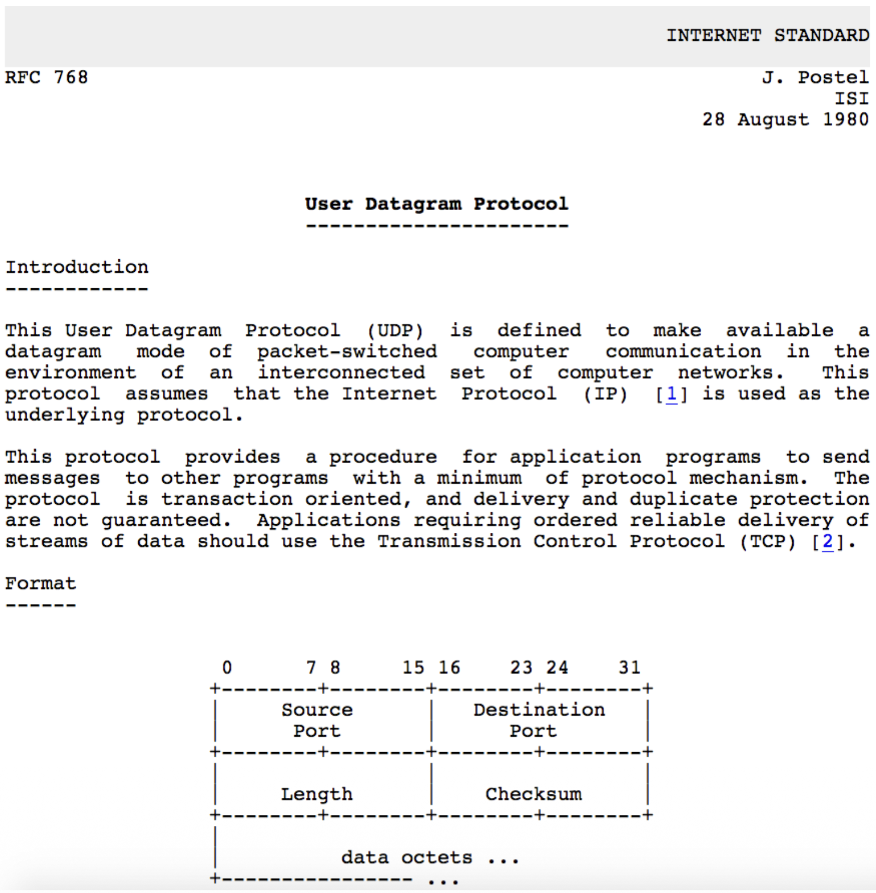
UDP Transport Layer Actions
SNMP CLIENT SNMP SERVER
+------------------------+ +------------------------+
| application | | application |
| (SNMP) | | (SNMP) |
+------------------------+ +------------------------+
| transport | | transport |
| (UDP) | | (UDP) |
+------------------------+ +------------------------+
| network | | network |
| (IP) | | (IP) |
+------------------------+ +------------------------+
| link | | link |
+------------------------+ +------------------------+
| physical | | physical |
+------------------------+ +------------------------+
| |
| |
+------------- IP Network -------------+
UDP Sender Actions:
- Receives an application-layer message (SNMP msg).
- Determines UDP header field values (source/dest ports, length, checksum).
- Creates a UDP segment by adding the header.
- Passes the segment to the IP layer.
UDP Receiver Actions:
- Receives the segment from the IP layer.
- Checks the UDP checksum for errors.
- Extracts the application-layer message.
- Demultiplexes the message to the correct application socket based on the destination port number.
UDP Segment Header
<-------------------32 bits-------------------->
+-----------------------+----------------------+
| Source Port | Destination Port |
+-----------------------+----------------------+
| length | checksum |
+----------------------------------------------+
| |
| Application Data (Payload) |
| |
+----------------------------------------------+
TCP / UDP Segment Format
Header Fields (8 bytes total):
- Source Port Number (16 bits)
- Destination Port Number (16 bits)
- Length (16 bits): Total length of the UDP segment (header + data) in bytes.
- Checksum (16 bits): Used for error detection. Payload: The data from the application layer follows the header.
UDP Checksum & Internet Checksum
Goal: To detect errors (flipped bits) in the transmitted segment. It is not for error correction.
Sender's Job:
- Treats the entire UDP segment (and parts of the IP pseudo-header) as a sequence of 16-bit integers.
- Adds them all together using one's complement addition.
- Takes the one's complement of this sum, which becomes the checksum value placed in the header.
Receiver's Job:
- Performs the same calculation on the received segment (including the checksum field).
- If the result is all 1 bits (one's complement of 0), no error is detected. Otherwise, an error is detected, and the segment is silently discarded.
Weakness: The Internet checksum provides weak protection. It can fail to detect certain types of errors (e.g., reordered 16-bit words or compensating bit flips across words), as shown in the example where the sum remains unchanged despite bit flips.
Summary: UDP
Recap: UDP is a simple, unreliable, connectionless datagram protocol. Advantages Reiterated:
- Low overhead and latency (no connection setup).
- Robustness in impaired network conditions (no forced slowdown from congestion control).
- Provides a basic error detection mechanism (checksum). Final Point: UDP serves as a flexible substrate. Applications that need more sophisticated services (like HTTP/3) can build them on top of UDP, giving them > more control than TCP allows.
Reliable Data Transfer (RDT)
RELIABLE SERVICE (ABSTRACTION) RELIABLE SERVICE (IMPLEMENTATION)
sending process receiving process -> sending process receiving process
+---------------+ +---------------+ -> +---------------+ +---------------+
| application | | application | -> | application | | application |
| data | | data | -> | data | | data |
+-------+-------+ +-------+-------+ -> +-------+-------+ +-------+-------+
| ^ -> | ^
| | -> | |
| reliable channel | -> +-----------------------+ +-----------------------+
+--------------------------------------+ -> | sender-side reliable | | receiver-side reliable|
-> | data transfer | | data transfer |
-> +-----------------------+ +-----------------------+
-> | ^
| |
+------------ unreliable channel ------+
(network)
The Principles
- Goal: To provide the abstraction of a perfectly reliable channel to the upper layers (the application processes), even though the underlying communication medium (network) is unreliable.
- Abstraction: From the application's viewpoint, data sent by the sending process simply arrives correctly at the receiving process.
The Implementation Reality
- Reality Check: The reliable channel is an abstraction. The actual implementation uses an unreliable channel (e.g., the network) that can lose, corrupt, or reorder packets.
- Protocol's Job: To implement the reliable service by adding logic on both the sender and receiver sides. This logic forms the Reliable Data Transfer (RDT) protocol.
Complexity Depends on Channel
- The complexity of the RDT protocol is directly determined by the characteristics of the unreliable channel it must overcome.
- The protocol design becomes more complex as the channel model becomes more hostile.
The State Problem
- Fundamental Challenge: The sender and receiver are separated entities. They cannot directly know each other's internal "state" (e.g., whether a packet was received).
- Solution via Messaging: The only way for them to coordinate and infer each other's state is by exchanging control messages (like acknowledgements - ACKs) over the unreliable channel itself.
RDT Protocol Interfaces (Service Primitives)
SENDING PROCESS RECEIVING PROCESS
+-----------------------+ +-----------------------+
| data | | data |
| (application) | | (application) |
+-----------+-----------+ +-----------+-----------+
| ^
| rdt_send() | deliver_data()
| |
-------------------------------- ----------------------------------
| sender-side implementation | | receiver-side implementation |
| of rdt | | of rdt |
| packet = make_pkt(data) | | rdt_rcv(packet) |
| udt_send(packet) | | extract(data) |
-------------------------------- ----------------------------------
| ^
| |
+-----------+-----------+ +-----------+-----------+
| data | | data |
| (application) | | (application) |
+-----------------------+ +-----------------------+
| ^
| |
+------------ unreliable channel -------------+
Sender Side:
rdt_send(): Called by the upper-layer application to pass data down for reliable delivery.udt_send(): Called by the RDT protocol to send a packet over the underlying unreliable channel.
Receiver Side:
rdt_rcv(): Called when a packet arrives from the channel.deliver_data(): Called by the RDT protocol to hand delivered data up to the application layer.
Reliable Data Transfer: Getting Started Methodology
- Approach: Incremental, layered development of the protocol. We start with a simple perfect channel and add complications one by one.
- Scope: Focus on unidirectional data transfer (one sender, one receiver), but note that control information (ACKs) must flow in the reverse direction.
- Tool: Finite State Machines (FSMs): Used to specify the behavior of the sender and receiver. An FSM defines states, events that cause transitions, and actions taken during transitions.
rdt1.0 – Reliable Transfer Over a Reliable Channel
- Assumption: The underlying channel is perfectly reliable (no bit errors, no loss). This is a hypothetical starting point.
- Protocol Logic: Trivial.
- Sender FSM: Wait for data from above, packetize it, send it.
- Receiver FSM: Wait for packet from below, extract data, deliver it up.
- No feedback needed because the channel is perfect.
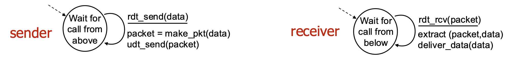
rdt2.0 – Channel With Bit Errors
- New Challenge: The channel can flip bits (corrupt packets). We use a checksum to detect errors.
- Recovery Mechanism:
- Feedback: Receiver sends explicit control messages back to sender:
- ACK: Acknowledgement (packet received OK).
- receiver explicitly tells sender that pkt received OK
- NAK: Negative Acknowledgement (packet had errors).
- receiver explicitly tells sender that pkt had errors
- Retransmission: Sender retransmits the packet upon receiving a NAK.
- Protocol Style: Stop-and-Wait. The sender sends one packet and then stops to wait for the receiver's response (ACK or NAK) before sending the next.
rdt2.0 – FSM Specification and Corrupted Packet Scenario
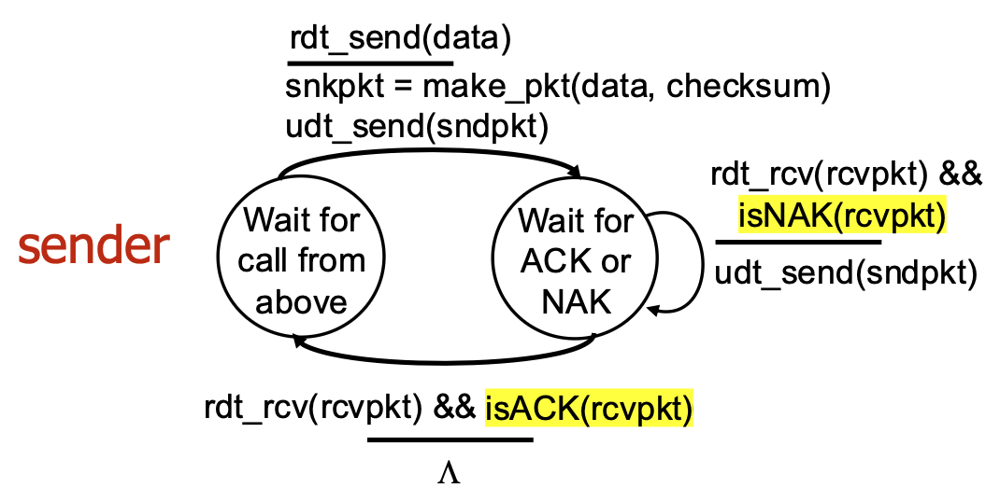
- Sender Logic: Has two main states: "Wait for call from above" (ready to send) and "Wait for ACK or NAK" (waiting for feedback). On NAK or corrupted ACK, it retransmits.
- Receiver Logic: Sends ACK for good packets, NAK for corrupted packets.
rdt2.0 Has a Fatal Flaw!
- The Problem: What if the ACK or NAK message itself becomes corrupted? The sender cannot interpret the corrupted feedback and doesn't know if the receiver got the packet.
- Naïve Solution (Flawed): If the sender simply retransmits on corrupted feedback, it may cause duplicate packets if the ACK was actually OK but just corrupted in transit.
- Real Solution (rdt2.1): The sender adds a sequence number (just 1 bit: 0 or 1) to each data packet. The receiver uses this number to detect and discard duplicate packets.
rdt2.1 – Handling Garbled ACK/NAKs
Key Changes:
- Sequence Numbers: Packets are labeled 0 or 1.
- Sender States: Doubled. The sender now has separate states for waiting for ACK/NAK for packet 0 and for packet 1. This allows it to know which packet is being acknowledged.
- Receiver Logic: Checks the sequence number. If it receives the expected packet (0 or 1), it delivers data and sends ACK. If it receives a duplicate (e.g., 0 again), it simply re-ACKs it, telling the sender "I already have 0, send the next one (1)."
rdt2.1 Sender Handling Garbled:
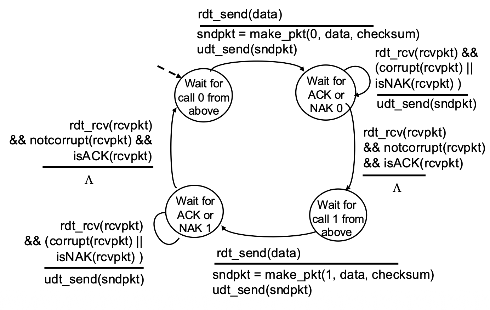
rdt2.1 Receiver Handling Garbled:
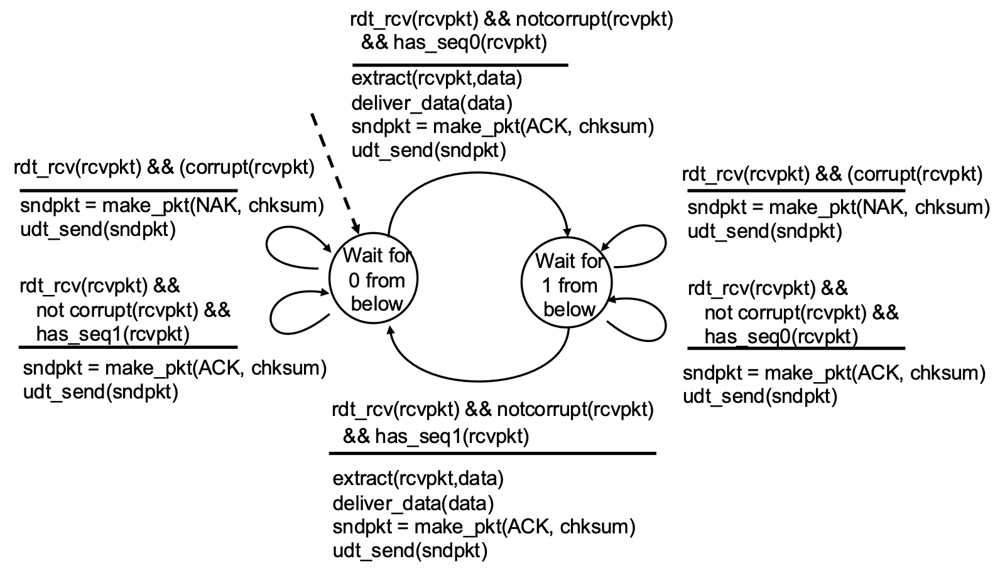
- Sender:
- Needs only 2 sequence numbers (0,1) for a stop-and-wait protocol because only one outstanding packet exists at a time.
- Must check if received ACK/NAK corrupted.
- States:
- The number of states doubled to track which packet (0 or 1) is expected or in flight.
- Receiver:
- Must also track the expected sequence number.
Note: receiver can not know if its last ACK/NAK received OK at sender
rdt2.2 – A NAK-Free Protocol
- Optimization: Achieves the same reliability as rdt2.1 but eliminates the NAK message.
- Mechanism: The receiver always sends an ACK. However, the ACK explicitly includes the sequence number of the packet it is acknowledging (e.g.,
ACK0,ACK1). - How it Handles Errors: If the sender receives a duplicate ACK (e.g., gets
ACK0again when expectingACK1), it interprets this the same way as a NAK—it means the receiver did not get the next packet correctly, so the sender retransmits. - Significance: This ACK-with-sequence-number approach is used by TCP (it uses cumulative ACKs, a related concept).
rdt2.2 Sender and Receiver Fragments:
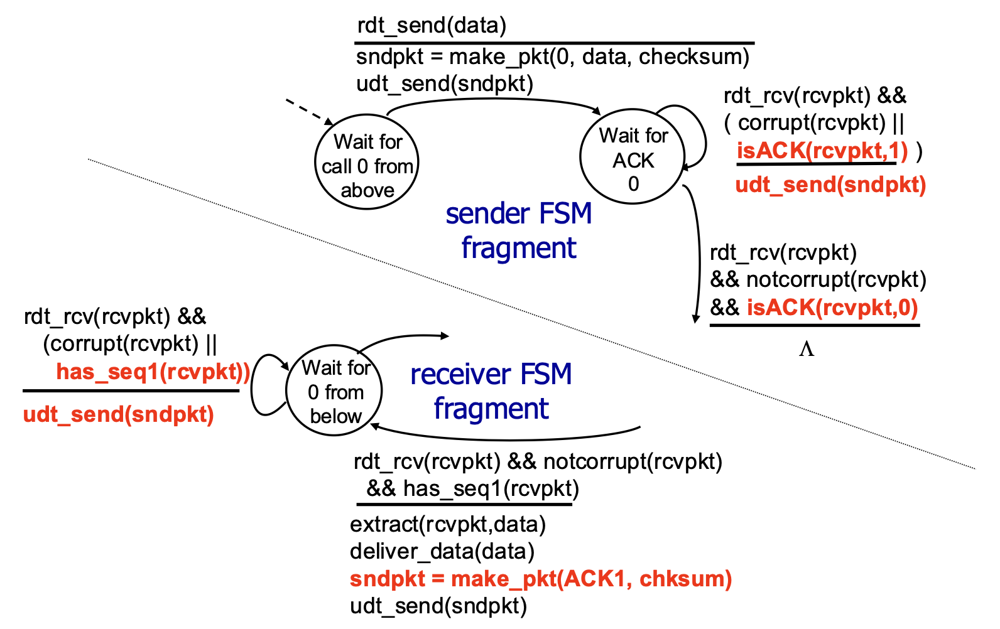
rdt3.0: Channels with Errors and Loss
- New Challenge: The underlying channel is now modeled as unreliable in the worst way: it can lose packets (both data packets and ACK packets). Bit errors are also possible.
- Available Tools: We have checksums (error detection), sequence numbers (duplicate detection), ACKs (feedback), and retransmissions (recovery from errors).
- The Gap: These tools are not sufficient to handle loss. If a packet disappears, the sender receives no feedback at all (neither ACK nor NAK/corrupted ACK). It would wait forever.
rdt3.0: Approach – The Timeout & Retransmit Mechanism
- Core Idea: The sender sets a countdown timer after sending a packet. It waits a "reasonable" amount of time (the timeout interval) for an ACK.
- Retransmission Trigger: If the timer expires before an ACK is received, the sender assumes the packet (or its ACK) was lost and retransmits the packet.
- Handling Delays, Not Loss: If the packet or ACK was merely delayed (not lost), the retransmission creates a duplicate. This is okay because the sequence numbers (from rdt2.1/2.2) allow the receiver to detect and handle duplicates correctly.
- Protocol Style: Still Stop-and-Wait (one packet at a time), but now with a timer.
rdt3.0 Sender FSM
- Key Timer Actions:
start_timer: Started immediately after sending a packet.stop_timer: Stopped when the correct ACK is received.timeout event: A new event that triggers a transition. When it occurs, the sender retransmits the packet and restarts the timer.- State Logic: Similar to rdt2.2, but now the sender must also handle the case where nothing happens (the timeout).
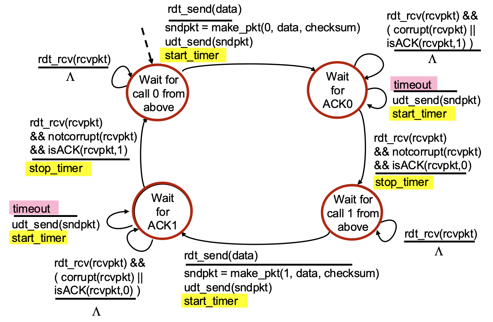
rdt3.0 in Action
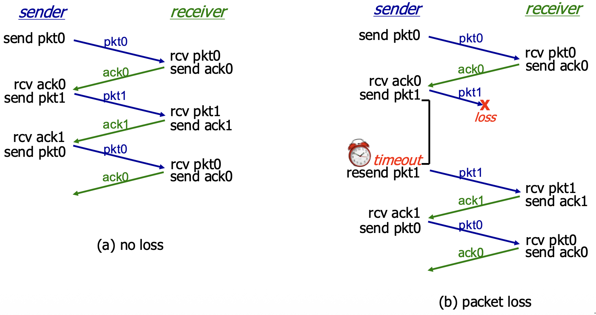
(a) No Loss: Normal operation. Packet sent, ACK received, timer stopped, next packet sent. (b) Packet Loss: The data packet is lost. Sender's timer expires, it retransmits the packet, and recovery proceeds.
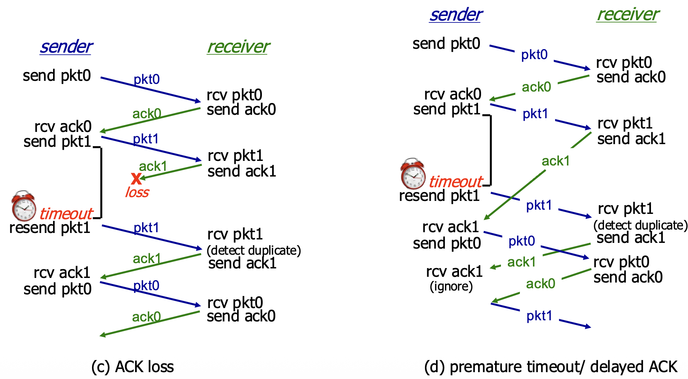
(c) ACK Loss: The ACK is lost. Sender's timer expires, it retransmits (causing a duplicate at the receiver). Receiver detects the duplicate via sequence number, re-sends the ACK, and the sender moves on. (d) Premature Timeout / Delayed ACK: The ACK is delayed, causing a timeout. The sender retransmits, creating a duplicate. The receiver gets the duplicate, discards it, and re-ACKs it. The sender eventually gets an ACK (could be from the first or second transmission) and proceeds. This shows the protocol is robust to timing variations.
Performance of rdt3.0 (Stop-and-Wait) – The Problem
- Performance Metric: Sender Utilization (U_sender). The fraction of time the sender is actually busy sending data vs. sitting idle.
- Example Calculation: 1 Gbps link, 15 ms propagation delay (RTT ~30 ms), 8000-bit packet.
- Transmission Time (L/R): Time to push all bits of the packet onto the link ->
8000/10^9 = 8 microseconds - Total Time per Packet: The sender sends for 8 µs, then sits idle for the rest of the RTT waiting for the ACK. Total cycle time ->
RTT + L/R ≈ 30.008 ms
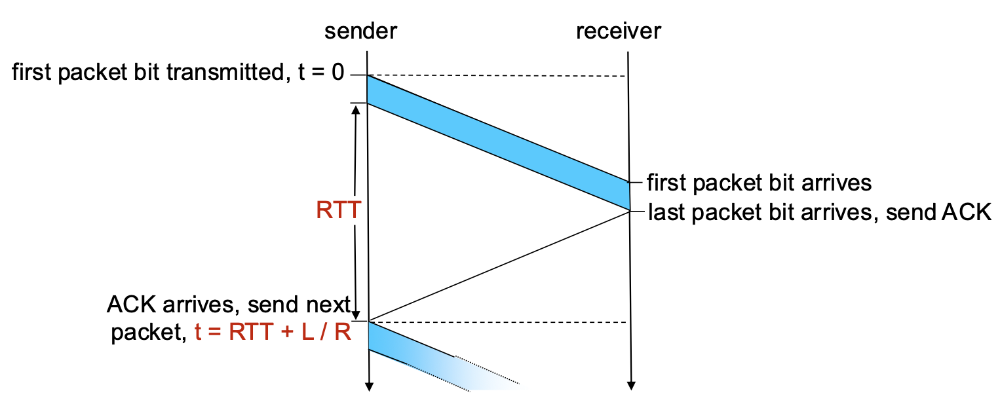
- Utilization: U_sender ->
(L/R) / (RTT + L/R) = 0.008 / 30.008 ≈ 0.00027
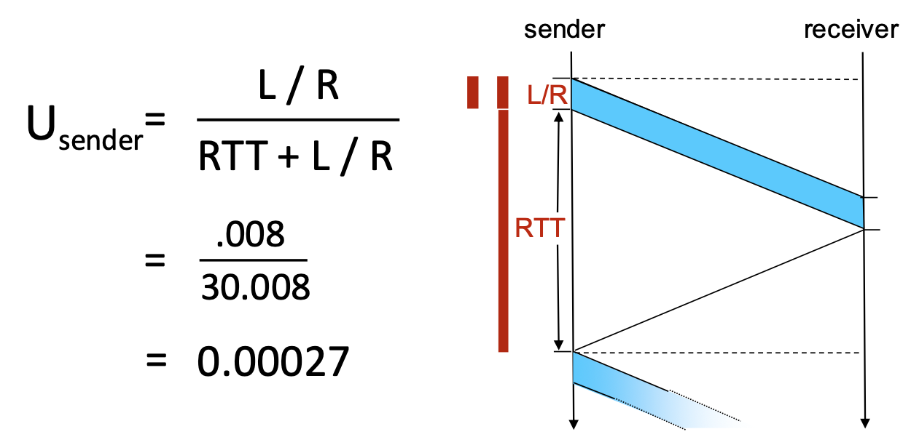
- Conclusion: The sender is busy only 0.027% of the time! The protocol severely underutilizes the high-capacity link. It limits performance far below what the physical infrastructure can suppor
Pipelined Protocols
- The Problem: Stop-and-wait forces the sender to be idle for an entire RTT after each packet.
- The Solution: Pipelining. Allow the sender to have multiple, "in-flight" packets (sent but not yet acknowledged) simultaneously.
Benefits of Pipelining:
- Dramatically increases sender utilization.
- Example: With a window of 3 packets in flight, utilization increases by a factor of 3 (from ~0.00027 to ~0.0008 in the example—still low due to huge RTT/bandwidth product, but the principle holds).
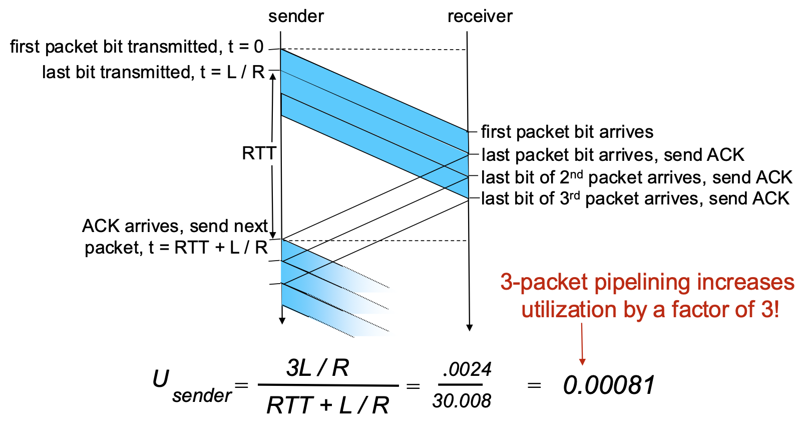
Go-Back-N (GBN)
Go-Back-N: Sender
- Core Concept: The sender maintains a sliding window of size N. It can transmit up to N consecutive packets without waiting for acknowledgements.
- Sender Window Visualization:
send_base: Sequence number of the oldest unacknowledged packet.nextseqnum: Sequence number of the next packet to be sent.- The window contains packets already sent but not yet ACKed.
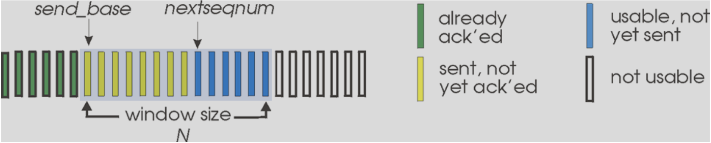
- Key Mechanisms:
- Cumulative ACKs: An ACK with sequence number
nacknowledges all packets up to and including n. When the sender receives ACK(n), it slides its window forward to begin atn+1. - Single Timer: The sender maintains only one timer for the oldest in-flight packet (
send_base). - Timeout Action: If a timeout occurs for packet
n, the sender retransmits packetnand all higher-numbered packets currently in its window (i.e., it goes back to n and re-sends everything from there). This is where the name comes from.
Go-Back-N: Receiver
- Receiver is Simple: The receiver only needs to remember one number: rcv_base (the expected sequence number of the next in-order packet).
- Receiver Actions:
- In-order Delivery: If a packet with sequence number rcv_base arrives correctly, it's delivered to the app, an ACK is sent, and rcv_base is incremented.
- Out-of-Order Packets: If a packet arrives with a sequence number higher than rcv_base (out-of-order), the receiver discards it (or can choose to buffer, but the standard GBN discards). Crucially, it re-sends an ACK for the last correctly received in-order packet (i.e., for sequence number rcv_base - 1). This generates duplicate ACKs.
- ACK Policy: Receiver always sends an ACK for the highest in-order sequence number received so far.
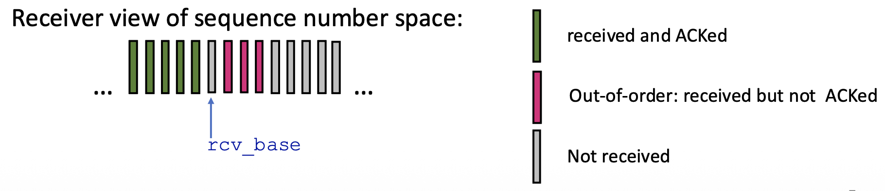
Go-Back-N in Action
- Scenario: Window size N=4. Packet 2 is lost.
- Sequence of Events:
- Sender transmits packets 0,1,2,3,4,5.
- Receiver gets packets 0,1 (sends ACK0, ACK1). Packet 2 is lost.
- Receiver gets packets 3,4,5 (out-of-order). For each, it discards them and re-sends ACK1.
- Sender eventually gets multiple duplicate ACK1s (but GBN doesn't act on them specifically). The timer for packet 2 expires.
- Sender goes back to N=2 and retransmits packets 2,3,4,5.
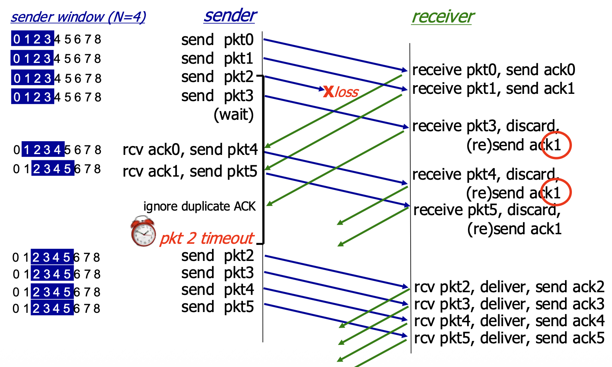
- Inefficiency: Even though packets 3,4,5 were received correctly by the network layer at the receiver, they were discarded and must be retransmitted. This wastes bandwidth.
Selective Repeat (SR): The Approach
- Goal: Overcome the inefficiency of GBN by having the sender retransmit only the specific packets that are lost or corrupted.
- pipelining: multiple packets in flight
- Key Features:
- Receiver: ACKs each correctly received packet individually, whether in-order or out-of-order. It buffers out-of-order packets.
- Sender: Maintains a sliding window but also maintains a timer for each individual unACKed packet in the window.
- Timeout Action: Only the specific timed-out packet is retransmitted.
Selective Repeat: Sender & Receiver Windows
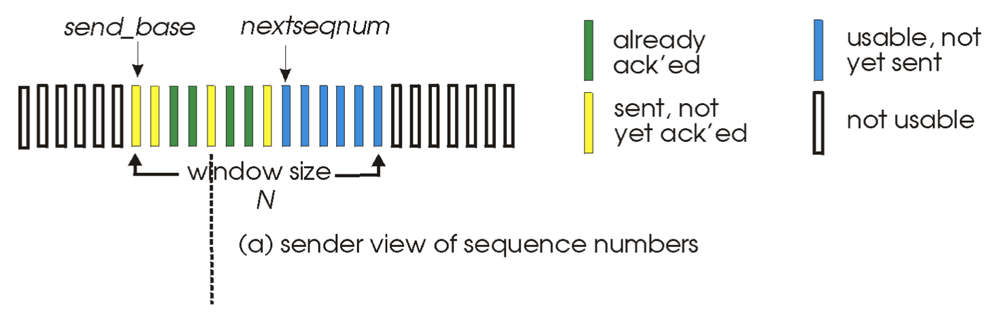
- Sender Window: Identical in concept to GBN's sender window: defines the range of sequence numbers the sender can use.
- Receiver Window: The receiver also maintains a window of size N. It will accept and buffer any packet whose sequence number falls within this window. The window slides forward when the application delivers in-order data.
Selective Repeat: Sender and Receiver Rules
Sender Rules:
- Send packet if its sequence number is within the window.
- Timeout(n): Retransmit only packet n.
- ACK(n): Mark packet n as received. If n is the send_base (the smallest unACKed packet), slide the window forward to the next smallest unACKed sequence number.
Receiver Rules:
- Packet in window [rcvbase, rcvbase+N-1]: Send ACK(n). Buffer if out-of-order. Deliver in-order data (and any buffered, now-in-order data) to the app, then slide the window forward.
- Packet in [rcvbase-N, rcvbase-1]: This is a duplicate of a packet already ACKed (the receiver's window has already slid past it). Re-send ACK(n) to help the sender.
- Otherwise (packet outside receiver's window): Ignore it.
Selective Repeat in Action
- Scenario: Window size N=4. Packet 2 is lost.
- Sequence of Events:
- Sender transmits packets 0,1,2,3.
- Receiver gets 0,1 (sends ACK0, ACK1, delivers data). Gets packet 3 out-of-order (2 is lost). It buffers packet 3 and sends ACK3.
- Sender gets ACK0, ACK1, slides window and sends packets 4,5.
- Receiver gets packets 4,5, buffers them, sends ACK4, ACK5.
- Packet 2's timer expires. Sender retransmits only packet 2.
- When ACK2 finally arrives, the sender slides its window. At the receiver, packet 2 allows delivery of packets 2,3,4,5 in order, and the receiver window slides forward.
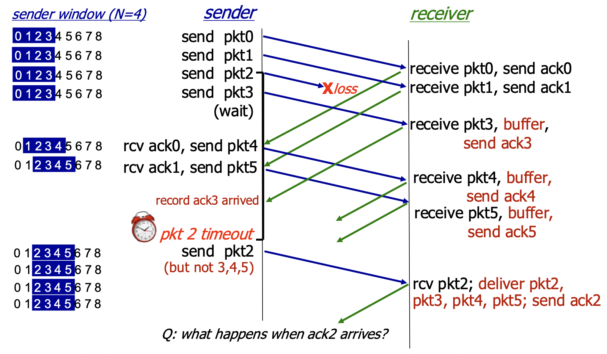
- Efficiency: Only the lost packet (2) was retransmitted, saving bandwidth compared to GBN.
Selective Repeat – A Dilemma! (The Sequence Number Wrap-Around Problem)
- The Problem: With a limited range of sequence numbers (e.g., 0,1,2,3) and a window size (N) that is too large relative to this range, ambiguity can arise.
- Scenario (b): The receiver's window has slid forward, and it expects packets 3,0,1. An old, delayed packet from a previous cycle with sequence number 0 arrives. The receiver cannot distinguish this old, duplicate packet 0 from a new, valid packet 0 that belongs to the current window. It incorrectly accepts the old duplicate.
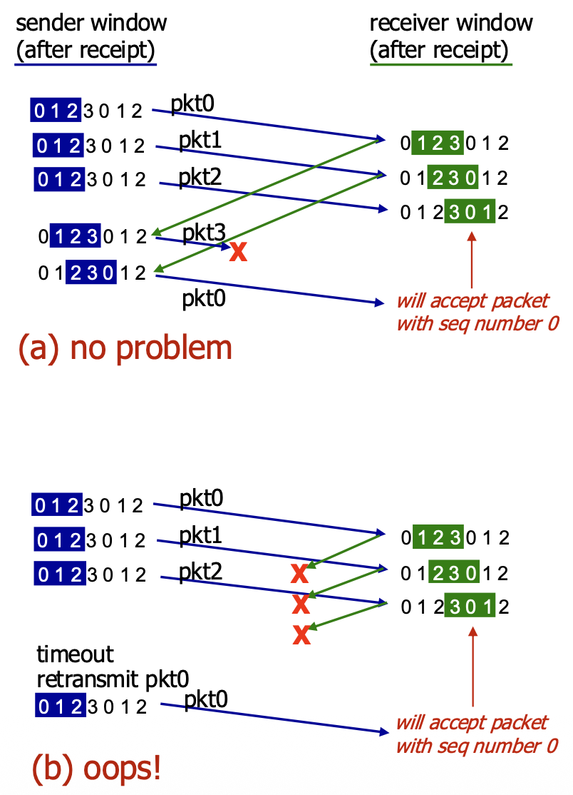
- The Cause: The receiver's view of the sequence number space overlaps with the sender's view in an ambiguous way because the sequence numbers have wrapped around.
- Solution: To avoid this, the sequence number space must be larger than the window size. More precisely, for SR protocol to work correctly, the number of available sequence numbers must be at least twice the sender window size (
MaxSeqNum>= 2 * N). This ensures that the receiver's window never overlaps ambiguously with the sender's previous window.
TCP
- Point-to-Point: A TCP connection is between exactly one sender and one receiver.
- Reliable, In-Order Byte Stream: Provides an unstructured, continuous flow of bytes to the application. It does not preserve "message boundaries" sent by the application.
- Full Duplex: Data can flow in both directions simultaneously on the same connection.
- Maximum Segment Size (MSS): The maximum amount of application data that can be placed in a single TCP segment, typically determined by the underlying link layer to avoid fragmentation.
- Cumulative ACKs & Pipelining: Uses cumulative acknowledgements and allows multiple in-flight segments (pipelining). The window size is dynamically controlled by congestion control and flow control mechanisms.
- Connection-Oriented: Requires a three-way handshake to establish connection state (sequence numbers, buffers) before data exchange.
- Flow Controlled: Prevents the sender from overwhelming the receiver by having the receiver advertise its available buffer space.
TCP Segment Structure
<-----------------------------------32 bits--------------------------------->
+---------------------------------------+-----------------------------------+
| Source Port | Destination Port |
+---------------------------------------+-----------------------------------+
| Sequence Number |
+---------------------------------------------------------------------------+
| Acknowledgement Number |
+----+----+----+----+----+----+----+----+-----------------------------------+
|HLEN|RES |URG |ACK |PSH |RST |SYN |FIN | receive Window |
+---------------------------------------+-----------------------------------+
| Checksum | Urgent Pointer |
+---------------------------------------------------------------------------+
| Options (variable lenght) |
+---------------------------------------------------------------------------+
| Application Data |
| (variable lenght) |
+---------------------------------------------------------------------------+
- Source & Destination Port Numbers (16 bits each): For multiplexing/demultiplexing.
- Sequence Number (32 bits): The byte number of the first data byte in this segment within the overall byte stream.
- Acknowledgement Number (32 bits): The sequence number of the next byte the receiver expects (cumulative ACK). Valid only if the ACK flag is set.
- Header Length (4 bits): Length of the TCP header in 32-bit words.
- Flags (6 bits): Control bits including:
- ACK: The acknowledgement field is valid.
- RST, SYN, FIN: Used for connection management (reset, synchronization/setup, finish/teardown).
- CWR, ECE: Used for Explicit Congestion Notification (ECN).
- URG, PSH: Less commonly used (urgent data, push function).
- Receive Window (16 bits): Used for flow control. Number of bytes the receiver is willing to accept.
- Checksum (16 bits): Internet checksum for error detection.
- Urgent Data Pointer (16 bits): Used if URG flag is set.
- Options: Variable length field for advanced features (e.g., MSS, window scaling).
TCP Sequence Numbers and ACKs
- Sequence Numbers: Count bytes in the data stream, not segments. The sequence number in a segment is the byte-stream number of its first data byte.
- Acknowledgements: A cumulative ACK. ACK number n means "I have received all bytes up to byte n-1 and I am expecting byte n next."
-
Out-of-Order Segments: The TCP specification does not mandate a specific action. Implementations can either discard them (like Go-Back-N) or buffer them (like Selective Repeat). Modern TCP implementations buffer out-of-order segments for better performance.
-
Example : A telnet session. Host A sends byte 'C' (seq=42, 1 byte). Host B acknowledges it (ACK=43, meaning "I expect byte 43 next") and echoes back the 'C' (seq=79, data='C'). Host A then acknowledges the echo (ACK=80).
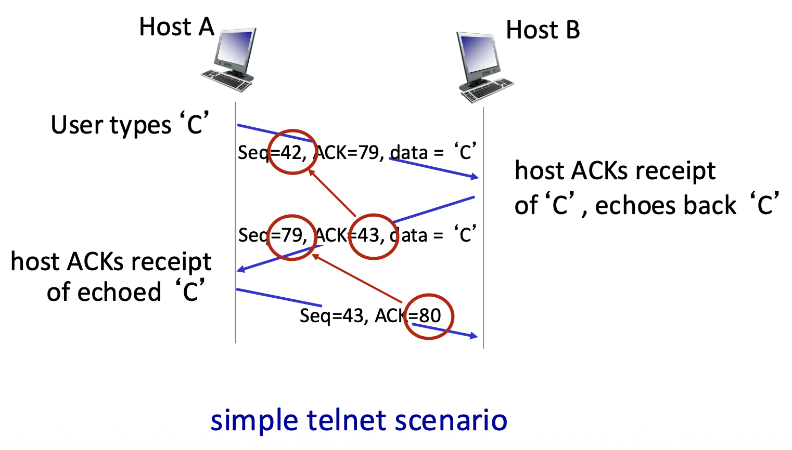
TCP Round Trip Time (RTT) and Timeout
- The Challenge: Setting the retransmission timeout (RTO) value is critical. It must be adaptive because RTT varies.
- If the timeout value is too short, it may cause premature timeouts and unnecessary retransmissions.
- If it is too long, it may result in slow reaction to packet loss.
- RTT Estimation: Uses an Exponential Weighted Moving Average (EWMA):
EstimatedRTT = (1-α)*EstimatedRTT + α*SampleRTTαis typically 0.125. This smooths out fluctuations.- Accounting for RTT Variation: To set a safe timeout, TCP estimates the deviation of RTT (DevRTT) using another EWMA:
DevRTT = (1-β)*DevRTT + β*|SampleRTT - EstimatedRTT|βis typically 0.25.DevRTTis safety margin.- Timeout Calculation:
TimeoutInterval = EstimatedRTT + 4 * DevRTT- This adds a "safety margin" that scales with the observed RTT variability.
TCP Sender (Simplified) Events
- Data from Application: Create segment with sequence number. If timer not running for the oldest unACKed byte, start it.
- Timeout: Retransmit the segment that caused the timeout. Restart the timer.
- ACK Received: If the ACK acknowledges new data (advances the send window), update the state. If there are still outstanding unACKed bytes, restart the timer.
TCP Retransmission Scenarios
- Lost ACK Scenario: A duplicate ACK for the same data eventually arrives (e.g., ACK=100 sent twice). The cumulative nature means the later ACK covers all data up to that point, so no retransmission occurs.
- Premature Timeout: The sender times out and retransmits a segment (Seq=92) even though the original segment and its ACK were merely delayed. The receiver gets a duplicate, discards it, and re-sends the same ACK (ACK=120). The sender's window advances correctly.
- Key Point: Cumulative ACKs provide robustness. A single ACK can confirm receipt of many segments and can compensate for lost or delayed earlier ACKs.
TCP Fast Retransmit
- Problem: Waiting for a timeout to detect loss can be slow, especially with long RTTs.
- Heuristic: The receipt of three duplicate ACKs (ACK=100, ACK=100, ACK=100) is a strong indicator that a segment was lost (because later segments arrived, generating the duplicate ACKs).
- Fast Retransmit Action: Upon receiving three duplicate ACKs, the sender immediately retransmits the oldest unACKed segment (the one presumed lost) without waiting for its timer to expire.
- Benefit: Much faster recovery from single-segment losses within a window, improving performance.
TCP Flow Control
The Problem
- Scenario: The receiving application may read data from its TCP socket buffers slower than the network/TCP stack is delivering data to those buffers.
- Problem: Without regulation, the sender could overflow the receiver's buffers, causing data loss.
- Solution: TCP Flow Control. A receiver-side mechanism where the receiver tells the sender how much free buffer space it has, thereby controlling the sender's transmission rate to prevent overflow.
The Mechanism
- Key Field: Receive Window (rwnd). In every ACK segment, the receiver advertises its current free buffer space in the rwnd header field.
- Receiver's Buffer:
RevBuffer: Total size of the buffer (set by OS/application).rwnd = RevBuffer - [Amount of Buffered, Unread Data]- Sender's Rule: The sender is only allowed to have a number of unacknowledged ("in-flight") bytes less than or equal to the latest rwnd value received from the receiver.
LastByteSent - LastByteAcked <= rwnd- Result: The sender self-throttles based on the receiver's consumption rate, guaranteeing the receiver's buffer will not overflow.
TCP Connection Management – The Need for Handshaking
- Purpose: Before any data flows, both client and server must:
- Agree to connect: Know that the other party is willing and able to communicate.
- Synchronize parameters: Exchange initial sequence numbers (ISNs) and learn about each other's buffer sizes (e.g.,
rwnd). - State & Variables: The handshake transitions both sides to the ESTABlished state and initializes key connection variables.
The Problem with a 2-Way Handshake
- Proposed 2-Way Handshake:
- Client sends: req_conn(x) (with its initial seq # x).
- Server replies: acc_conn(x) (acknowledging x).
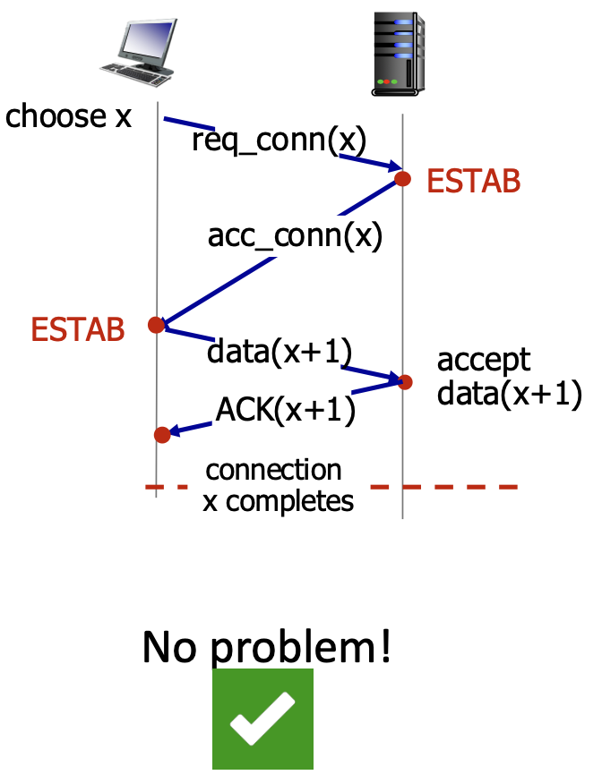
- Why It Fails:
- An old, delayed req_conn(x) message from a previous connection could arrive at the server.
- The server, not knowing it's old, replies with acc_conn(x) and enters ESTAB state.
- The client might have already terminated that old connection. The server is now left in a "half-open connection" state, wasting resources, believing a non-existent client is connected.
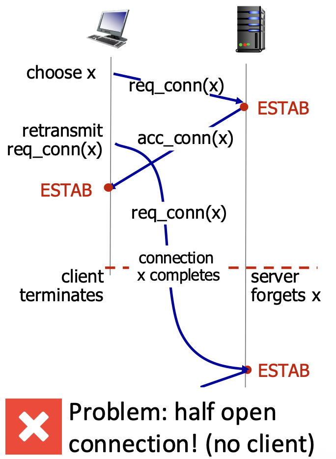
- Root Cause: The 2-way handshake cannot distinguish between a new connection request and a delayed duplicate request from an old connection. The server needs a way to confirm the client is currently alive and responding.
TCP 3-Way Handshake (The Solution)
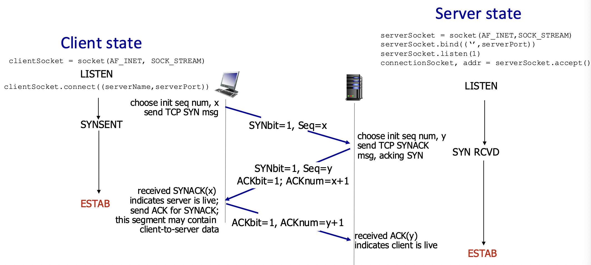
- Step 1: SYN
- Client → Server: SYN=1, Seq=x (client picks random initial sequence number x).
- Client State: SYN_SENT.
- Step 2: SYN+ACK
- Server → Client: SYN=1, Seq=y (server picks its own ISN y). ACK=1, ACKnum=x+1 (acknowledges client's SYN).
- Server State: SYN_RCVD.
- Step 3: ACK
- Client → Server: ACK=1, ACKnum=y+1 (acknowledges server's SYN). This segment may already carry the first batch of application data.
- Both States: Transition to ESTABLISHED.
- Why it Works: The third ACK confirms to the server that the client received its SYN-ACK and is currently alive, thereby validating the connection request as fresh, not a stale duplicate.
Closing a TCP Connection
- Graceful Teardown: Each side closes its half of the connection independently using the FIN (finish) flag.
-
Typical Sequence:
-
One side (e.g., client) is done sending data. It sends a segment with FIN=1.
- The other side (server) acknowledges the FIN with an ACK.
- The server can continue sending its own data. When done, it sends its own FIN.
-
The client ACKs the server's FIN.
-
Key Point: A FIN signals "I have no more data to send." The connection is fully closed only after both sides have sent and acknowledged FIN segments. ACKs for FINs can often be combined with the other side's own FIN (piggybacking).
Principles of Congestion Control – The Problem
- Congestion: "Too many sources sending too much data too fast for the network to handle." It's a network-wide resource contention problem.
- Manifestations:
- Long Delays: Due to queueing in router buffers.
- Packet Loss: When router buffers overflow.
- Crucial Distinction: Congestion control is different from flow control.
- Flow Control: Prevents a single fast sender from overwhelming a single slow receiver (an end-to-end issue).
- Congestion Control: Prevents the aggregate of many senders from overloading the network's links and routers (a system-wide issue).
Scenario 1: Infinite Buffers, No Retransmissions
- Setup: Two flows sharing a link of capacity R. Router has infinite buffers.
- Observation: As the sending rate ($\lambda_{in}$) approaches
R/2(the fair share), queuing delay increases towards infinity, but throughput eventually reachesR/2 - Cost: Extreme delay.
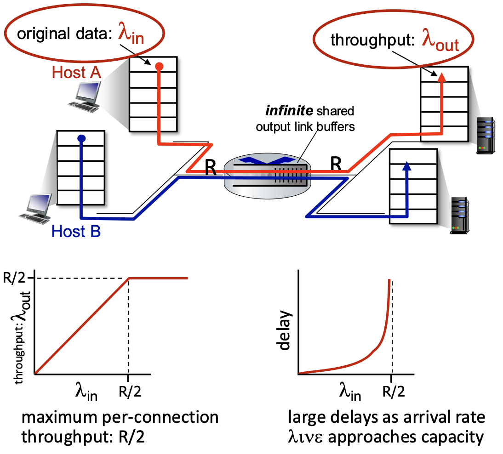
Scenario 2: Finite Buffers, With Retransmissions
- Setup: One router with finite buffers. Senders retransmit lost packets.
- Ideal Knowledge: If senders know exactly when packets are lost, they only retransmit needed packets. The "cost" is that some of the link's capacity (R/2) is wasted on retransmissions instead of new data, reducing goodput.
- Realistic Case: Senders use timeouts, which can cause premature retransmissions and unneeded duplicate packets. This makes the problem worse:
- Wasted Work: Link carries multiple copies of the same packet.
- Decreased Throughput: The maximum achievable useful throughput is less than
R/2because an increasing fraction of the capacity is spent on duplicates. - Key Insight: Retransmissions due to congestion consume bandwidth themselves, creating a positive feedback loop that can further reduce useful throughput.
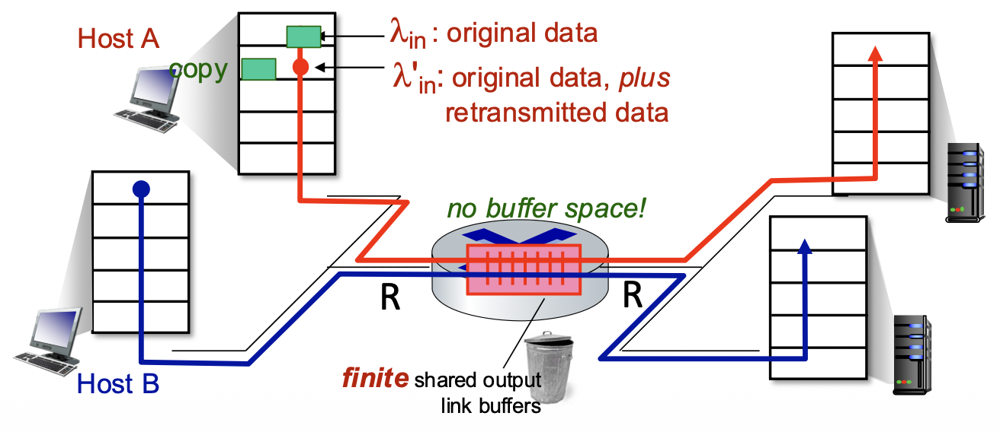
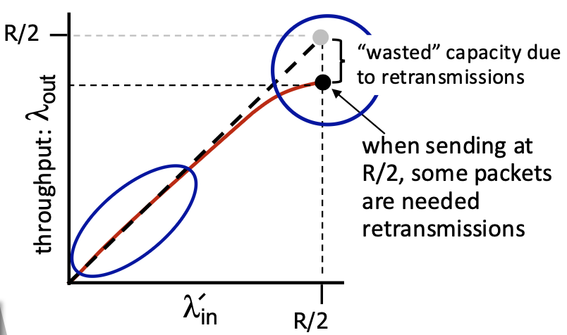
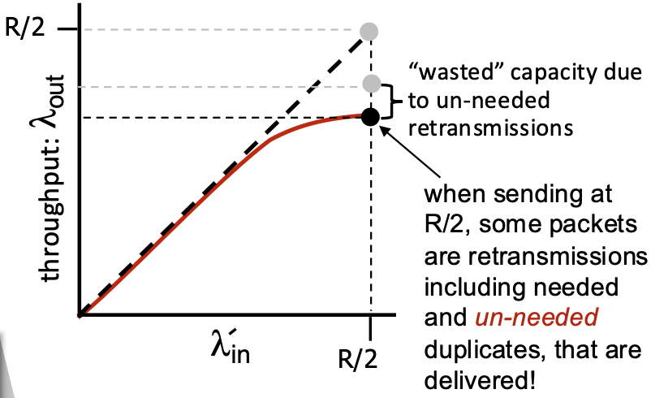
Scenario 3: Multi-Hop Paths, Multiple Flows
- Setup: Four senders, multiple hops, shared queues.
- Observation: As red traffic ($\lambda_{in}$) increases and congests a shared queue, it can cause packet drops for unrelated (blue) flows passing through the same queue. This leads to unfairness—blue's throughput can drop to zero.
- New Cost: Wasted Upstream Resources. When a packet is dropped after traveling several hops, all the transmission capacity and buffer space used to move it along the path up to the point of drop is completely wasted. This is a major inefficiency.
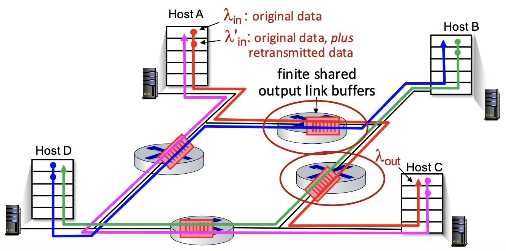
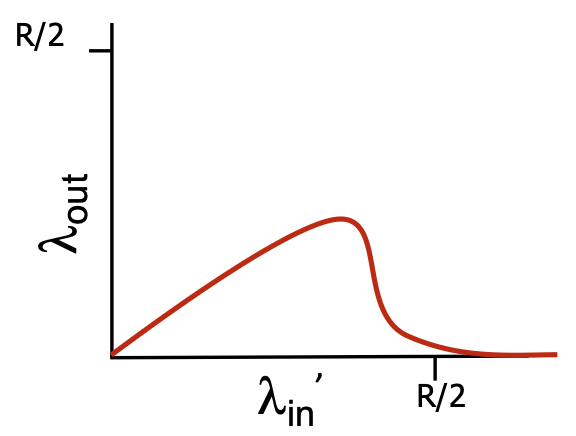
Causes/Costs of Congestion – Insights
- Hard Limit: Throughput cannot exceed link capacity.
- Delay Cost: Queuing delay increases as load approaches capacity.
- Retransmission Cost: Loss and needed retransmissions reduce effective throughput.
- Duplicate Cost: Unneeded duplicates (from premature timeouts) further reduce throughput.
- Upstream Waste Cost: Dropping a packet wastes all resources used to get it to the point of loss.
Approaches Towards Congestion Control
End-to-End Congestion Control:
- The network provides no explicit information about congestion.
- End systems (senders) must infer congestion from observable network symptoms: packet loss (via timeout or duplicate ACKs) and increased delay.
- This is the approach used by standard TCP.
Network-Assisted Congestion Control:
- Routers directly participate by providing feedback to end hosts.
- Feedback can be:
- A single bit (e.g., ECN - Explicit Congestion Notification in TCP/IP, DECbit) to signal "congestion experienced."
- An explicit rate the sender should use.
- This requires changes in both routers and end-host protocols.
TCP Congestion Control: AIMD (Additive Increase Multiplicative Decrease)
- Core Strategy: TCP senders probe for available bandwidth by gradually increasing their sending rate until they detect packet loss (a sign of congestion), then they rapidly back off.
- AIMD Phases:
- Additive Increase: For every RTT without loss, the sender increases its sending rate by 1 Maximum Segment Size (MSS). This is a linear, cautious increase.
-
Multiplicative Decrease: Upon detecting a loss event, the sender cuts its sending rate multiplicatively (by half, in the basic case).
-
Resulting Pattern: The "sawtooth" pattern, where the sending rate climbs linearly, drops sharply on loss, and climbs again. This represents a continuous, distributed process of probing for and reacting to available bandwidth.
-
Two Types of Multiplicative Decrease (depending on loss detection):
- Loss via Triple Duplicate ACKs (Fast Retransmit):
cwndis set to half of its previous value. (Characteristic of TCP Reno). -
Loss via Timeout (More Severe):
cwndis reset to 1 MSS. (Characteristic of early TCP Tahoe; Reno also does this on timeout). -
Why AIMD? Mathematical analysis has shown that AIMD, as a distributed, asynchronous algorithm run independently by all TCP flows, has two excellent properties:
- It optimizes the total throughput of all flows across the network (achieves a desirable "fair" equilibrium).
- It is stable—it converges to a steady state and avoids wild oscillations.
TCP Congestion Control: Details
Key Variable: Congestion Window (cwnd). This is the primary factor limiting how much data a TCP sender can have in flight. It's separate from the receiver's flow control window (rwnd). The actual window is min(cwnd, rwnd).
Sender's Rule: LastByteSent - LastByteAcked <= cwnd => This limits in-flight data.
Sending Rate: Approximately cwnd / RTT bytes/sec. TCP controls its rate by dynamically adjusting cwnd based on inferred network congestion.
$\text{TCP rate} \approx \frac{\text{cwnd}}{\text{RTT}}\ \text{bytes/sec}$
cwnd is measured in bytes (or more conveniently, in units of MSS).
TCP Slow Start
- Purpose: To quickly ramp up the sending rate from a cold start at the beginning of a connection or after a timeout, avoiding underutilization of the available bandwidth.
- Mechanism: Exponential Increase.
- Start:
cwnd= 1 MSS. - For every ACK received (not just once per RTT),
cwndis increased by 1 MSS. - Result:
cwnddoubles every RTT. (1 MSS -> 2 MSS -> 4 MSS -> 8 MSS...). - Name is Misleading: It starts slow but grows very fast.
TCP: From Slow Start to Congestion Avoidance
- The Question: When to stop the aggressive exponential increase and switch to the gentle linear (AIMD) increase?
- The Answer: At the Slow Start Threshold (
ssthresh). -
How ssthresh is Set: On a loss event,
ssthreshis set to half the value of cwnd when the loss was detected (ssthresh = cwnd / 2). -
Operation:
- When
cwnd < ssthresh: Slow Start phase (exponential growth). -
When
cwnd >= ssthresh: Congestion Avoidance phase (additive increase, linear growth). -
Graph: Shows the exponential rise, the reduction of
ssthreshon loss, and the subsequent linear growth in the Congestion Avoidance phase.
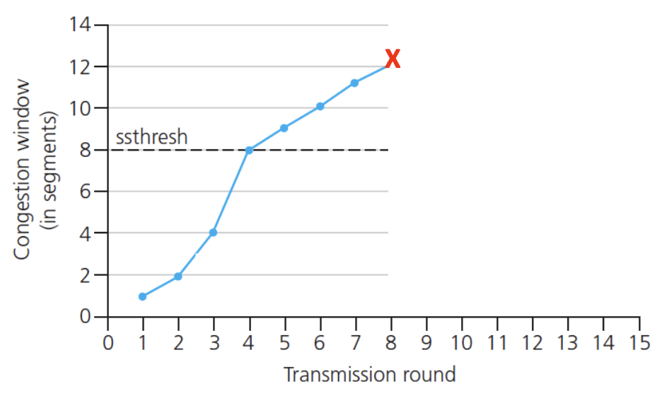
Summary: TCP Congestion Control (State Machine)
We are gonna summarize standard TCP Reno congestion control via diagram below:
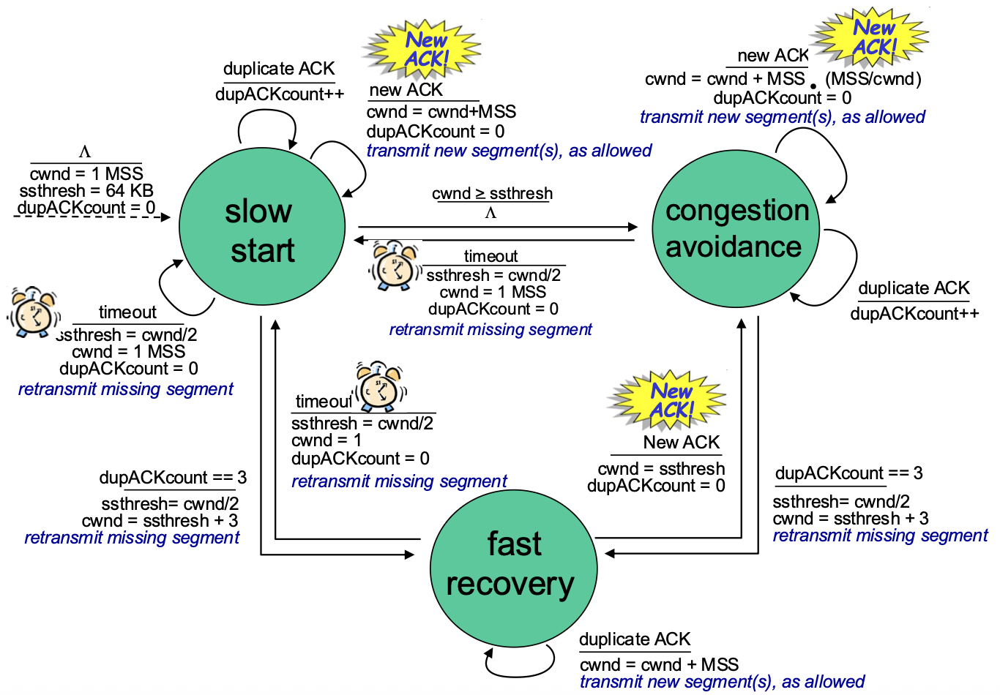
Three Main States:
- Slow Start: Exponential increase. Enters on start or timeout. Exits when
cwnd >= ssthreshor on loss. - Congestion Avoidance: Additive Increase. The main steady state. On duplicate ACKs, enters Fast Recovery.
- Fast Recovery: Triggered by three duplicate ACKs (triple dupACK). Sender retransmits the missing packet, sets
ssthresh = cwnd/2, and setscwnd = ssthresh + 3. For each additional duplicate ACK, cwnd increases slightly (partial window inflation). On receiving a new ACK, exits to Congestion Avoidance, setting cwnd = ssthresh.
Loss Responses:
- Triple DupACK: Fast Retransmit and Fast Recovery. cwnd is halved.
- Timeout: Severe response. cwnd is reset to 1 MSS, and Slow Start is re-entered.
TCP CUBIC (A Modern Enhancement)
- Motivation: Is the AIMD sawtooth, especially the linear probe, the best way to find bandwidth? Can we be smarter after a loss?
- Key Insight: The W_max (window size at which the last loss occurred) is a good estimate of the network's capacity. After backing off, the congestion state near the bottleneck likely hasn't changed dramatically.
- CUBIC's Strategy: After a loss, instead of linear increase, CUBIC uses a cubic function of time to grow the window.
- Growth Pattern: It initially grows faster than linear to quickly approach the previous W_max.
- Then: It grows very slowly and cautiously as it nears W_max, "hovering" around that point to maximize utilization without causing frequent losses.
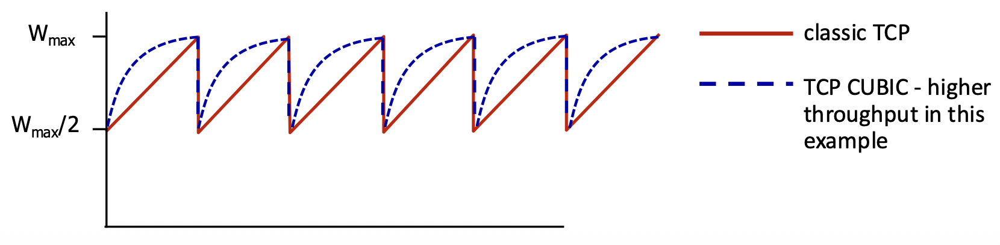
- Parameter K: The time point when the cubic function will reach W_max. It's tunable.
- Status: CUBIC is the default congestion control algorithm in Linux and has been widely used on the Internet. It provides higher and more stable throughput than classic TCP Reno, especially on high-bandwidth, long-delay (high BDP) paths.
Network Layer
Network-Layer Services and Protocols
- Primary Role: The network layer is responsible for transporting segments from the sending host to the receiving host across multiple networks.
- Sender's Job: Encapsulates transport-layer segments into datagrams (IP packets) and passes them to the link layer.
-
Receiver's Job: Delivers the extracted segments up to the transport layer.
-
Ubiquity: Network layer protocols (primarily IP) exist in every Internet device—both end hosts and routers.
-
Router's Critical Function:
- Examines Header Fields: Inspects the IP header of every datagram.
- Moves Datagrams: Forwards datagrams from an input port to the appropriate output port to move them along the path from source to destination.
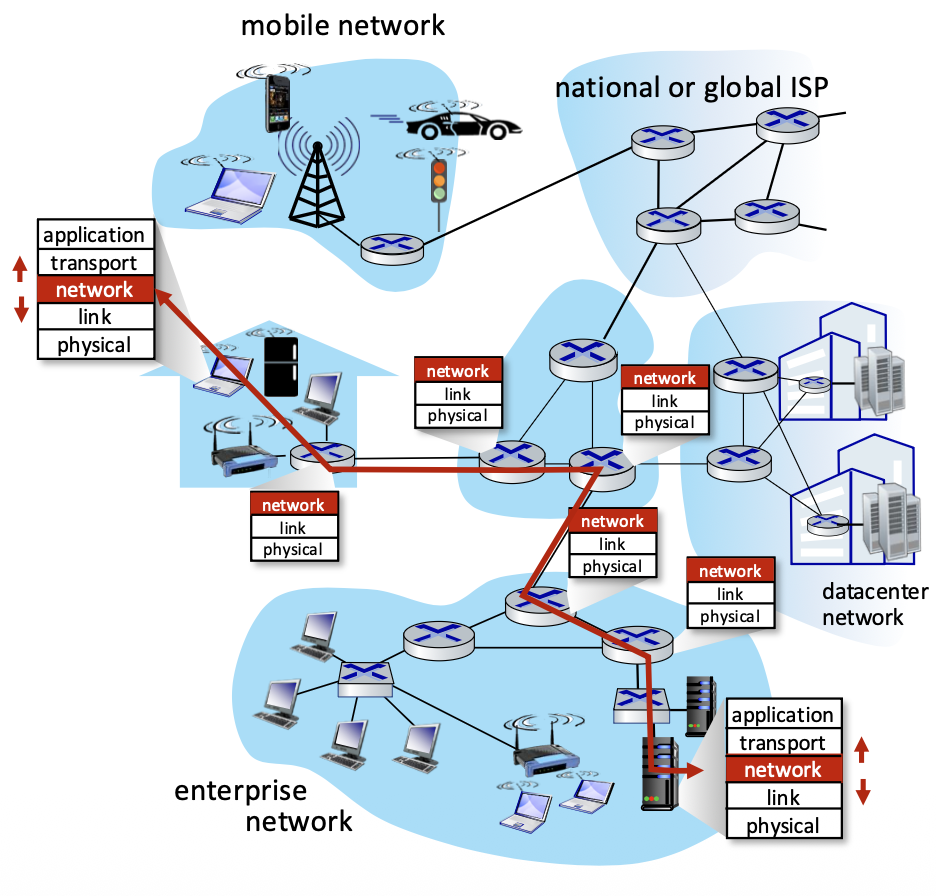
Two Key Network-Layer Functions
- Forwarding (Data Plane Function): The router-internal process of moving an arriving packet from an input link to the appropriate output link. It's a local action performed at each router using a forwarding table. (Analogy: Driving through a single highway interchange).
- Routing (Control Plane Function): The network-wide process of determining the end-to-end path that packets will take from source to destination. Executed by routing algorithms that populate the forwarding tables. (Analogy: Planning the entire route for a trip).
Key Distinction: Routing determines the path; forwarding moves packets along the path.
Network Layer: Data Plane vs. Control Plane
Data Plane (Per-router, Local):
- The forwarding function. It's a local, per-router operation.
- Job: Decide how to handle a datagram arriving on an input port (typically: send it to which output port?).
- Operates on short timescales (nanoseconds per packet).
Control Plane (Network-wide):
- The routing function. Determines the contents of the forwarding tables.
- Job: Compute the paths (routes) that datagrams should take through the network.
- Operates on longer timescales (seconds, minutes).
Two Control Plane Approaches:
- Traditional (Per-router): Routing algorithms run in each router (e.g., OSPF, BGP).
- Software-Defined Networking (SDN): Routing logic runs in a remote, centralized controller that programs the routers' forwarding tables.
Per-Router Control Plane (Traditional Approach)
- Architecture: Each router runs its own routing algorithm software (e.g., OSPF daemon).
- Process: Routers exchange routing messages with each other. Each router's algorithm computes its own forwarding table based on this distributed information.
- Flow: Control plane (routing algorithm) populates the forwarding table. The data plane (forwarding hardware) consults this table for every packet.
Software-Defined Networking (SDN) Control Plane
- Architecture: Decouples the control and data planes. A remote, centralized controller (logically centralized, often physically distributed for reliability) computes the routes for the entire network.
- Process: The controller communicates with simple forwarding agents in each router (via a protocol like OpenFlow). It computes and installs the forwarding table entries into the routers. Benefit: Enables more flexible, programmable, and manageable networks compared to the distributed, per-router approach.
Router Architecture Overview
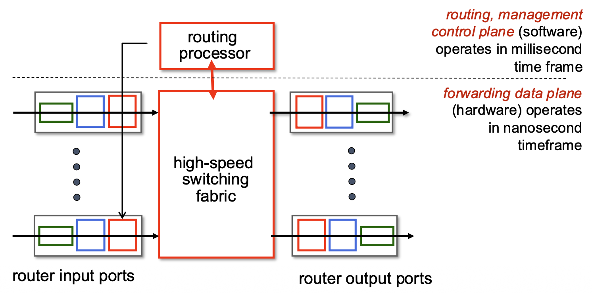
- Input Ports: Perform physical/link-layer functions, lookup, and forwarding.
- Output Ports: Buffer and transmit packets.
- Switching Fabric: The internal "network" that connects input ports to output ports (e.g., via a crossbar, shared memory, or bus).
- Routing Processor: Executes the control plane software (routing protocols, management). Operates on a slow, millisecond timescale.
- Forwarding Hardware: Executes the data plane functions (table lookup, switching). Must operate at extremely high speed (nanoseconds, "line speed") to handle incoming packet rates.
Input Port Functions
+-------------------------+
+------------------+ +-------------------------+ | decentralized switching | +------------------+
| physical layer |-->| link layer protocol |-->| lookup |-->| switch fabric |
| line termination |-->| (receive) |-->| forwarding | +------------------+
+------------------+ +-------------------------+ | queueing |
+-------------------------+
Processing Steps at an Input Port:
- Physical Layer: Bit-level reception.
- Link Layer: Frame processing (e.g., Ethernet decapsulation, error check).
- Lookup & Forwarding (Critical Step): Examine the network-layer header (e.g., IP destination address) and perform a lookup in the forwarding table to determine the output port for this packet. This must happen at line speed.
Two Forwarding Paradigms:
- Destination-Based Forwarding (Traditional): Lookup based only on the destination IP address.
- Generalized Forwarding (SDN/OpenFlow): Lookup can be based on any combination of header fields (source/dest IP, port, protocol, etc.), enabling more complex policies (e.g., firewalling, load balancing).
Queueing: If packets arrive faster than they can be forwarded into the switching fabric, they are queued at the input port, which can lead to delays and loss.
Destination-Based Forwarding & Longest Prefix Matching (LPM)
- The Problem: IP addresses are not assigned in neat, contiguous blocks that align with table entries. A destination address may match multiple table entries of different lengths.
- Solution: Longest Prefix Matching (LPM). The forwarding table contains entries with IP prefixes (e.g., 11001000 00010111 00010* ******). When looking up a destination address, the router selects the entry with the longest (most specific) matching prefix.
Longest Prefix Matching: when looking for forwarding table entry for given destination address, use longest address prefix that matches destination address.
Example:
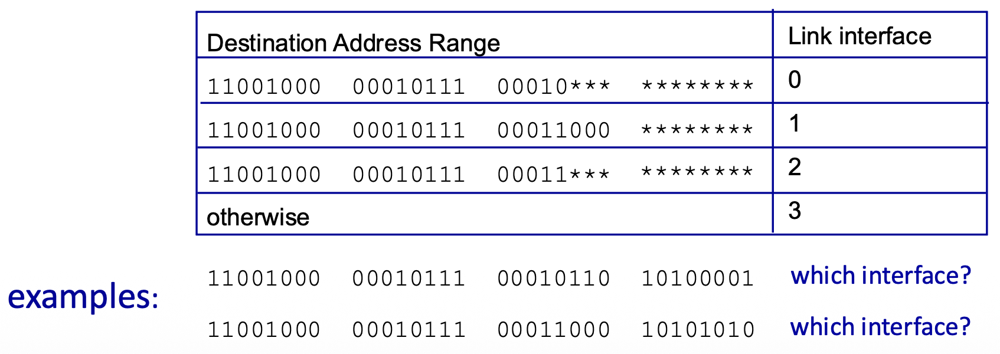
- Address:
11001000 00010111 00010110 10100001 - Matches Prefix 0 (00010***): 21-bit match.
- Matches Prefix 2 (00011***): Does NOT match.
- Result: Use interface 0 (longest matching prefix).
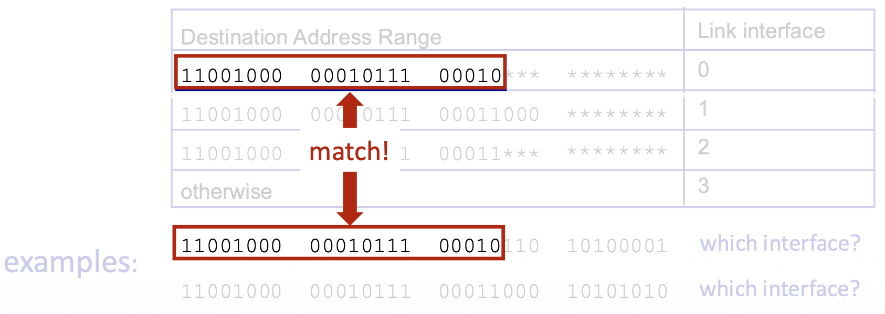
- Address:
11001000 00010111 00011000 10101010 - Matches Prefix 1 (00011000): 24-bit match.
- Matches Prefix 2 (00011***): 21-bit match.
- Result: Use interface 1 (longest matching prefix is 24 bits).
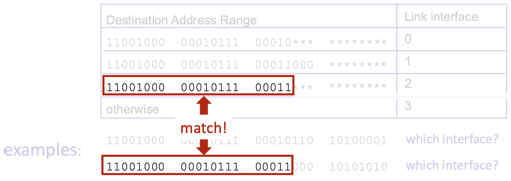
Why LPM? It allows for hierarchical, aggregated routing. A more specific route (longer prefix) overrides a less specific one (shorter prefix). This is fundamental to how Internet routing scales.
Network Layer: Internet Protocol Stack
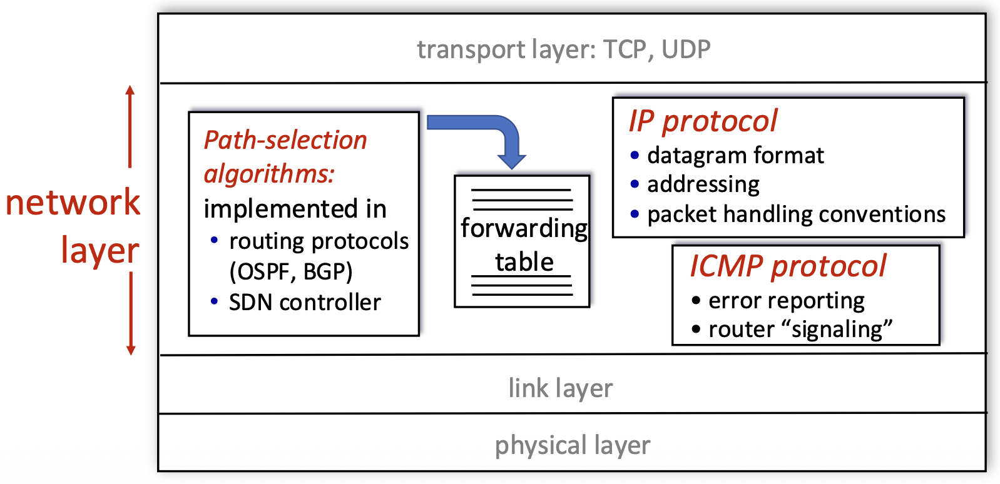
- IP Protocol: The core. Defines the datagram format, addressing scheme (IP addresses), and packet handling conventions (e.g., forwarding, fragmentation).
- Routing Protocols (OSPF, BGP) / SDN Controller: Implement the control plane. They populate the forwarding table with the information IP needs to forward packets.
- ICMP Protocol: Used for error reporting (e.g., "Destination Unreachable") and router signaling (e.g., ping, traceroute). It's a helper protocol that works alongside IP.
- Forwarding Table: The data plane's "cheat sheet," filled by the control plane, used by IP to make per-packet forwarding decisions.
IP Datagram Format
<--------------------------------32 bits-------------------------------->
+-----+-----------+-----------------+-----------------------------------+
| ver | head len. | type of service | length |
+-----+-----------+-----------------+--------+--------------------------+
| 16-bit identifier | flgs | fragment offset |
+------------------+----------------+--------+--------------------------+
| time to live | upper layer | header checksum |
+------------------+----------------+-----------------------------------+
| source IP address |
+-----------------------------------------------------------------------+
| destination IP address |
+-----------------------------------------------------------------------+
| options (if any) |
+-----------------------------------------------------------------------+
| payload data |
| (variable lenght, typically a TCP or UDP segment) |
+-----------------------------------------------------------------------+
- Version (4 bits): IP version (e.g., 4 for IPv4).
- Header Length (4 bits): Length of IP header in 32-bit words (typically 5, meaning 20 bytes, if no options).
- Type of Service (8 bits): Historically for QoS; now used for Differentiated Services (DiffServ) and Explicit Congestion Notification (ECN).
- Total Length (16 bits): Length of the entire datagram (header + data) in bytes. Maximum is 65,535 bytes.
- Identifier, Flags, Fragment Offset (16+3+13 bits): Used for fragmentation and reassembly of packets that are too large for a link's MTU.
- Time to Live (TTL - 8 bits): Decremented by each router. Packet is discarded if TTL reaches 0, preventing infinite loops.
- Protocol (8 bits): Identifies the upper-layer protocol (e.g., 6 for TCP, 17 for UDP) for demultiplexing.
- Header Checksum (16 bits): Error-check for the header only (not the data). Recalculated at each hop.
- Source & Destination IP Address (32 bits each): The fundamental identifiers.
- Options (variable): Rarely used. Can include features like record route, timestamp.
- Data/Payload: The transport-layer segment (TCP/UDP) being carried.
- Overhead Note: Significant overhead: 20 bytes for IP + 20 for TCP = 40 bytes before application data.
IP Addressing: Introduction
- IP Address: A 32-bit identifier assigned to each interface of a host or router.
-
Interface: The connection point between a device and a physical link.
-
Key Points:
- Routers have multiple interfaces (and thus multiple IP addresses).
-
Hosts typically have one or two interfaces (e.g., Ethernet and Wi-Fi).
-
Dotted-Decimal Notation: Human-readable format (e.g., 223.1.1.1), where each number represents 8 bits (an octet) of the 32-bit address.
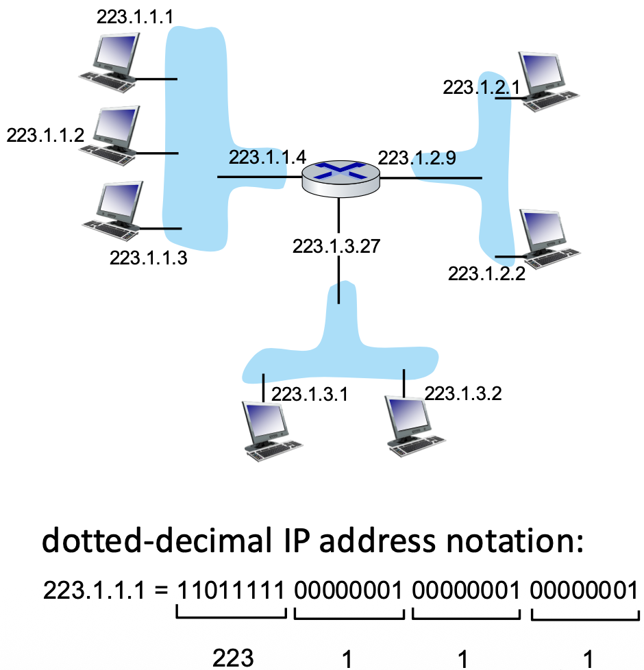
Subnets
- Definition: A subnet is a group of device interfaces that can communicate directly with each other at the link layer without passing through a router. (Physically isolated network segments).
- How to Identify Subnets: Mentally "detach" each interface from its device. Each isolated "island" of connected interfaces forms a subnet.
- IP Address Structure within a Subnet: An IP address can be divided into two parts:
- Subnet Part (High-order bits): Common to all devices on the same subnet.
- Host Part (Low-order bits): Unique to each device within the subnet.
- Subnet Address: Represented using CIDR notation:
a.b.c.d/x, wherexis the number of bits in the subnet part. Example:223.1.1.0/24(subnet part is first 24 bits; host part is last 8 bits). The subnet address itself typically has all host bits set to 0.
IP addressing: CIDR
- CIDR (Classless Inter-Domain Routing): The modern, flexible addressing scheme that replaced the rigid class-based (A, B, C) system.
- Key Feature: The subnet prefix length (
/x) is variable and explicitly specified. This allows for efficient allocation of address blocks of any size. - Format:
a.b.c.d/x. Example:200.23.16.0/23means the first 23 bits identify the network/subnet, and the remaining 9 bits identify hosts within it.
<----------- subnet part ------------> <-- host part -->
11001000 00010111 00010000 00000000
How to Get an IP Address? (DHCP)
Two Questions:
- Host gets its IP address: Via manual configuration or, more commonly, DHCP.
- Network gets its subnet prefix: Allocated by an ISP from a larger block.
DHCP (Dynamic Host Configuration Protocol):
- Purpose: Allow a host to dynamically obtain an IP address, subnet mask, default gateway, and DNS server info when joining a network. Enables "plug-and-play" networking.
- Process:
- DHCP Discover: Host broadcasts "Is there a DHCP server?"
- DHCP Offer: Server(s) respond with a proposed IP address.
- DHCP Request: Host broadcasts a request to use a specific offered address.
-
DHCP ACK: Server confirms and commits the lease.
-
Lease: Addresses are loaned for a period and can be reclaimed, enabling reuse.
- Server Location: Often resides in the local router.
How a Network Gets Its Address Block
- Process: An organization (e.g., a company, university) obtains a block of IP addresses from its upstream Internet Service Provider (ISP).
- Example: An ISP has a large block (
200.23.16.0/20). It can subdivide this block into smaller chunks (e.g.,/23blocks) and allocate them to different customer organizations. - Hierarchical Allocation: This creates a hierarchy: IANA -> Regional Internet Registries (RIRs) -> ISPs -> Organizations -> Hosts. This hierarchy is crucial for scalable routing.
Network-Layer Functions
Review & Control Plane Approaches
Review of Key Functions:
- Data Plane (Forwarding): The local, per-packet action of moving a packet from a router's input port to its output port. This is the "how" of packet movement.
- Control Plane (Routing): The network-wide process of determining the end-to-end paths that packets should follow. This is the "where" decision that populates forwarding tables.
Two Architectures for the Control Plane:
- Per-Router Control (Traditional): Each router runs its own distributed routing algorithm (e.g., OSPF, BGP) and computes its own forwarding table independently, by communicating with its neighbors.
- Logically Centralized Control (Software-Defined Networking - SDN): The control logic is separated from the routers and runs in a centralized (or logically centralized) remote controller. This controller computes the routes for the entire network and programs the routers' forwarding tables.
Per-Router Control Plane (Traditional Architecture)
Decentralized & Distributed: The control plane functionality is replicated in every router.
How it Works:
- Each router runs a routing algorithm daemon (e.g., an OSPF process).
- These daemons exchange routing protocol messages with each other to learn about network topology and paths.
- Based on this distributed information, each router's algorithm independently computes its own forwarding table.
- The data plane (forwarding hardware) in each router consults this locally computed table for every packet.
Analogy: Like a group of drivers each planning their own route using a map and talking to other drivers, rather than having a central dispatcher.
Software-Defined Networking (SDN) Control Plane
Centralized Intelligence, Simplified Switches: The core innovation of SDN is the separation of the control plane from the data plane.
How it Works:
- A remote controller (which can be physically distributed for reliability but is logically centralized) holds the "big picture" of the network.
- Routers become simple forwarding devices (data plane only) that expose a standardized API (e.g., OpenFlow).
- The controller runs the network-wide routing logic and computes all forwarding tables.
- The controller installs these table entries into the routers via the southbound API.
Benefits (Implied):
- Programmability: Network behavior can be changed easily by updating controller software.
- Centralized Management: Easier to implement consistent policies, traffic engineering, and innovation.
- Simpler Switches: Router hardware can be cheaper and less complex.
The graph below illustrates the fundamental architectural difference: many independent, interacting brains (per-router) vs. one central brain controlling many simple devices (SDN).
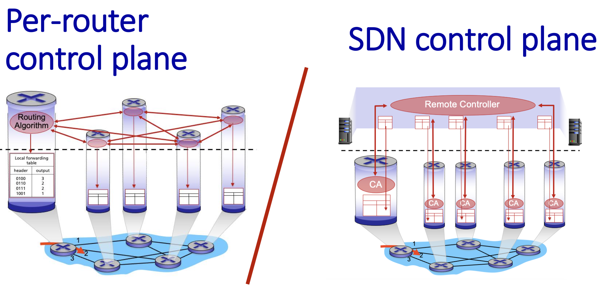
Routing Fundamentals & Algorithm Classification
- Objective: The fundamental goal is to find a "good" path through a network of routers from a source host to a destination host.
- Path: A sequence of routers the packet will traverse.
- Good: Can be defined by different metrics: shortest (least cost), fastest (lowest delay), or least congested. This is a central and challenging problem in networking.
Graph abstraction: link costs
Modeling the Network: For algorithmic purposes, a network is abstracted as a graph G = (N, E)
N: Set of nodes (routers) => { u, v, w, x, y, z } E: Set of edges (communication links) => { (u,v), (u,x), (v,x), (v,w), (x,w), (x,y), (w,y), (w,z), (y,z) }
Link Cost ($c_{a,b}$): Each link has an associated cost. This can be static (e.g., always 1, or inversely related to bandwidth) or dynamic (reflecting current congestion). A cost of ∞ means no direct connection.
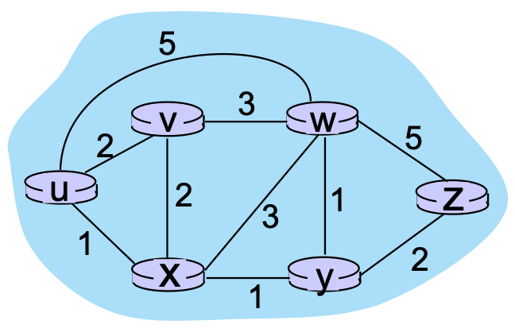
Routing algorithm classification
Routing algorithms can be classified based on the information they use and how often routing information changes.
1. Classification Based on Information Scope:
Global (Link-State Algorithm)
- Each router has a complete view of the entire network topology.
- Routers know:
- All nodes in the network
- All links between nodes
- The cost of each link
- Routers independently compute the shortest path to every destination using Dijkstra’s algorithm.
- Information is distributed using link-state advertisements (LSAs), which are flooded to all routers.
Key Characteristics:
- Fast convergence
- High memory and CPU usage
- Accurate and consistent routing tables
Examples:
- OSPF (Open Shortest Path First)
- IS-IS
Decentralized (Distance-Vector Algorithm)
- Each router knows only:
- The cost to its direct neighbors
- The distance vectors received from those neighbors
- Routers exchange routing information periodically with neighbors.
- Paths are calculated using the Bellman-Ford algorithm.
Key Characteristics:
- Slower convergence
- Lower computation and memory requirements
- Susceptible to routing loops and the count-to-infinity problem
Example:
- RIP (Routing Information Protocol)
2. Classification Based on Change Rate:
- Static:
Static Routing
- Routes are manually configured by administrators.
- No automatic updates when topology changes.
- Suitable for small, stable networks.
Advantages:
- Low overhead
- Predictable behavior
Disadvantages:
- Not scalable
- Routes change very slowly (e.g., manual configuration).
- No automatic failure recovery
Dynamic Routing
- Routes are automatically updated in response to network changes such as:
- Link failures
- Congestion
- Topology updates
- Uses routing protocols to exchange information.
- Periodic updates or in response to link cost changes
Advantages:
- Adaptive and fault-tolerant
- Routers change more quickly
- Suitable for large and complex networks
Examples:
- Distance Vector: RIP
- Link State: OSPF, IS-IS
Summary Table
| Category | Knowledge Scope | Algorithm | Update Method | Examples |
|---|---|---|---|---|
| Global | Full topology | Dijkstra | Link-state flooding | OSPF, IS-IS |
| Decentralized | Neighbors only | Bellman-Ford | Periodic updates | RIP |
| Static | Fixed routes | Manual | None | Static routing |
| Dynamic | Adaptive | Algorithm-based | Automatic | OSPF, RIP |